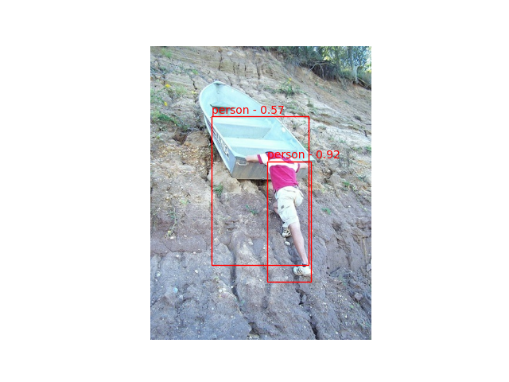

<!DOCTYPE html>
<html class="writer-html5" lang="en" >
<head>
  <meta charset="utf-8" /><meta name="generator" content="Docutils 0.17.1: http://docutils.sourceforge.net/" />

  <meta name="viewport" content="width=device-width, initial-scale=1.0" />
  <title>YOLO/PASCAL-VOC detection tutorial &mdash; Akida Examples  documentation</title>
      <link rel="stylesheet" href="../../_static/pygments.css" type="text/css" />
      <link rel="stylesheet" href="../../_static/css/theme.css" type="text/css" />
      <link rel="stylesheet" href="../../_static/sg_gallery.css" type="text/css" />
      <link rel="stylesheet" href="../../_static/sg_gallery-binder.css" type="text/css" />
      <link rel="stylesheet" href="../../_static/sg_gallery-dataframe.css" type="text/css" />
      <link rel="stylesheet" href="../../_static/sg_gallery-rendered-html.css" type="text/css" />
      <link rel="stylesheet" href="../../_static/custom.css" type="text/css" />
    <link rel="shortcut icon" href="../../_static/favicon.ico"/>
  <!--[if lt IE 9]>
    <script src="../../_static/js/html5shiv.min.js"></script>
  <![endif]-->
  
        <script data-url_root="../../" id="documentation_options" src="../../_static/documentation_options.js"></script>
        <script src="../../_static/jquery.js"></script>
        <script src="../../_static/underscore.js"></script>
        <script src="../../_static/doctools.js"></script>
    <script src="../../_static/js/theme.js"></script>
    <link rel="index" title="Index" href="../../genindex.html" />
    <link rel="search" title="Search" href="../../search.html" />
    <link rel="next" title="CNN conversion flow tutorial" href="../cnn2snn/plot_0_cnn_flow.html" />
    <link rel="prev" title="Transfer learning with AkidaNet for PlantVillage" href="plot_4_transfer_learning.html" /> 
</head>

<body class="wy-body-for-nav"> 
  <div class="wy-grid-for-nav">
    <nav data-toggle="wy-nav-shift" class="wy-nav-side">
      <div class="wy-side-scroll">
        <div class="wy-side-nav-search"  style="background: #78b3ff" >
            <a href="../../index.html">
            
          </a>
              <div class="version">
                MetaTF 2.2.2
              </div>
<div role="search">
  <form id="rtd-search-form" class="wy-form" action="../../search.html" method="get">
    <input type="text" name="q" placeholder="Search docs" />
    <input type="hidden" name="check_keywords" value="yes" />
    <input type="hidden" name="area" value="default" />
  </form>
</div>
        </div><div class="wy-menu wy-menu-vertical" data-spy="affix" role="navigation" aria-label="Navigation menu">
              <ul class="current">
<li class="toctree-l1"><a class="reference internal" href="../../index.html">Overview</a></li>
<li class="toctree-l1"><a class="reference internal" href="../../installation.html">Installation</a><ul>
<li class="toctree-l2"><a class="reference internal" href="../../installation.html#requirements">Requirements</a></li>
<li class="toctree-l2"><a class="reference internal" href="../../installation.html#quick-installation">Quick installation</a></li>
<li class="toctree-l2"><a class="reference internal" href="../../installation.html#running-examples">Running examples</a></li>
</ul>
</li>
<li class="toctree-l1"><a class="reference internal" href="../../user_guide/user_guide.html">User guide</a><ul>
<li class="toctree-l2"><a class="reference internal" href="../../user_guide/getting_started.html">Getting started</a><ul>
<li class="toctree-l3"><a class="reference internal" href="../../user_guide/getting_started.html#for-beginners">For beginners</a></li>
<li class="toctree-l3"><a class="reference internal" href="../../user_guide/getting_started.html#for-users-familiar-with-deep-learning">For users familiar with deep-learning</a></li>
</ul>
</li>
<li class="toctree-l2"><a class="reference internal" href="../../user_guide/akida.html">Akida user guide</a><ul>
<li class="toctree-l3"><a class="reference internal" href="../../user_guide/akida.html#introduction">Introduction</a><ul>
<li class="toctree-l4"><a class="reference internal" href="../../user_guide/akida.html#akida-layers">Akida layers</a></li>
<li class="toctree-l4"><a class="reference internal" href="../../user_guide/akida.html#input-format">Input Format</a></li>
<li class="toctree-l4"><a class="reference internal" href="../../user_guide/akida.html#a-versatile-machine-learning-framework">A versatile machine learning framework</a></li>
</ul>
</li>
<li class="toctree-l3"><a class="reference internal" href="../../user_guide/akida.html#the-sequential-model">The Sequential model</a><ul>
<li class="toctree-l4"><a class="reference internal" href="../../user_guide/akida.html#specifying-the-model">Specifying the model</a></li>
<li class="toctree-l4"><a class="reference internal" href="../../user_guide/akida.html#accessing-layer-parameters-and-weights">Accessing layer parameters and weights</a></li>
<li class="toctree-l4"><a class="reference internal" href="../../user_guide/akida.html#inference">Inference</a></li>
<li class="toctree-l4"><a class="reference internal" href="../../user_guide/akida.html#saving-and-loading">Saving and loading</a></li>
<li class="toctree-l4"><a class="reference internal" href="../../user_guide/akida.html#input-layer-types">Input layer types</a></li>
<li class="toctree-l4"><a class="reference internal" href="../../user_guide/akida.html#data-processing-layer-types">Data-Processing layer types</a></li>
</ul>
</li>
<li class="toctree-l3"><a class="reference internal" href="../../user_guide/akida.html#model-hardware-mapping">Model Hardware Mapping</a><ul>
<li class="toctree-l4"><a class="reference internal" href="../../user_guide/akida.html#devices">Devices</a></li>
<li class="toctree-l4"><a class="reference internal" href="../../user_guide/akida.html#model-mapping">Model mapping</a></li>
<li class="toctree-l4"><a class="reference internal" href="../../user_guide/akida.html#advanced-mapping-details-and-hardware-devices-usage">Advanced Mapping Details and Hardware Devices Usage</a></li>
<li class="toctree-l4"><a class="reference internal" href="../../user_guide/akida.html#performances-measurement">Performances measurement</a></li>
</ul>
</li>
<li class="toctree-l3"><a class="reference internal" href="../../user_guide/akida.html#id1">Using Akida Edge learning</a><ul>
<li class="toctree-l4"><a class="reference internal" href="../../user_guide/akida.html#learning-constraints">Learning constraints</a></li>
<li class="toctree-l4"><a class="reference internal" href="../../user_guide/akida.html#compiling-a-layer">Compiling a layer</a></li>
</ul>
</li>
</ul>
</li>
<li class="toctree-l2"><a class="reference internal" href="../../user_guide/cnn2snn.html">CNN2SNN toolkit</a><ul>
<li class="toctree-l3"><a class="reference internal" href="../../user_guide/cnn2snn.html#overview">Overview</a><ul>
<li class="toctree-l4"><a class="reference internal" href="../../user_guide/cnn2snn.html#conversion-workflow">Conversion workflow</a></li>
<li class="toctree-l4"><a class="reference internal" href="../../user_guide/cnn2snn.html#typical-training-scenario">Typical training scenario</a></li>
<li class="toctree-l4"><a class="reference internal" href="../../user_guide/cnn2snn.html#design-compatibility-constraints">Design compatibility constraints</a></li>
<li class="toctree-l4"><a class="reference internal" href="../../user_guide/cnn2snn.html#quantization-compatibility-constraints">Quantization compatibility constraints</a></li>
<li class="toctree-l4"><a class="reference internal" href="../../user_guide/cnn2snn.html#command-line-interface">Command-line interface</a></li>
</ul>
</li>
<li class="toctree-l3"><a class="reference internal" href="../../user_guide/cnn2snn.html#layers-considerations">Layers Considerations</a><ul>
<li class="toctree-l4"><a class="reference internal" href="../../user_guide/cnn2snn.html#supported-layer-types">Supported layer types</a></li>
<li class="toctree-l4"><a class="reference internal" href="../../user_guide/cnn2snn.html#cnn2snn-quantization-aware-layers">CNN2SNN Quantization-aware layers</a></li>
<li class="toctree-l4"><a class="reference internal" href="../../user_guide/cnn2snn.html#training-only-layers">Training-Only Layers</a></li>
<li class="toctree-l4"><a class="reference internal" href="../../user_guide/cnn2snn.html#first-layers">First Layers</a></li>
<li class="toctree-l4"><a class="reference internal" href="../../user_guide/cnn2snn.html#id6">Final Layers</a></li>
</ul>
</li>
<li class="toctree-l3"><a class="reference internal" href="../../user_guide/cnn2snn.html#tips-and-tricks">Tips and Tricks</a></li>
</ul>
</li>
<li class="toctree-l2"><a class="reference internal" href="../../user_guide/akida_models.html">Akida models zoo</a><ul>
<li class="toctree-l3"><a class="reference internal" href="../../user_guide/akida_models.html#overview">Overview</a></li>
<li class="toctree-l3"><a class="reference internal" href="../../user_guide/akida_models.html#command-line-interface-for-model-creation">Command-line interface for model creation</a></li>
<li class="toctree-l3"><a class="reference internal" href="../../user_guide/akida_models.html#command-line-interface-for-model-training">Command-line interface for model training</a><ul>
<li class="toctree-l4"><a class="reference internal" href="../../user_guide/akida_models.html#utk-face-training">UTK Face training</a></li>
<li class="toctree-l4"><a class="reference internal" href="../../user_guide/akida_models.html#kws-training">KWS training</a></li>
<li class="toctree-l4"><a class="reference internal" href="../../user_guide/akida_models.html#yolo-training">YOLO training</a></li>
<li class="toctree-l4"><a class="reference internal" href="../../user_guide/akida_models.html#akidanet-training">AkidaNet training</a></li>
</ul>
</li>
<li class="toctree-l3"><a class="reference internal" href="../../user_guide/akida_models.html#command-line-interface-for-model-evaluation">Command-line interface for model evaluation</a></li>
<li class="toctree-l3"><a class="reference internal" href="../../user_guide/akida_models.html#id1">Layer Blocks</a><ul>
<li class="toctree-l4"><a class="reference internal" href="../../user_guide/akida_models.html#conv-block"><code class="docutils literal notranslate"><span class="pre">conv_block</span></code></a></li>
<li class="toctree-l4"><a class="reference internal" href="../../user_guide/akida_models.html#dense-block"><code class="docutils literal notranslate"><span class="pre">dense_block</span></code></a></li>
<li class="toctree-l4"><a class="reference internal" href="../../user_guide/akida_models.html#separable-conv-block"><code class="docutils literal notranslate"><span class="pre">separable_conv_block</span></code></a></li>
</ul>
</li>
</ul>
</li>
<li class="toctree-l2"><a class="reference internal" href="../../user_guide/hw_constraints.html">Hardware constraints</a><ul>
<li class="toctree-l3"><a class="reference internal" href="../../user_guide/hw_constraints.html#inputconvolutional">InputConvolutional</a></li>
<li class="toctree-l3"><a class="reference internal" href="../../user_guide/hw_constraints.html#convolutional">Convolutional</a></li>
<li class="toctree-l3"><a class="reference internal" href="../../user_guide/hw_constraints.html#separableconvolutional">SeparableConvolutional</a></li>
<li class="toctree-l3"><a class="reference internal" href="../../user_guide/hw_constraints.html#fullyconnected">FullyConnected</a></li>
</ul>
</li>
<li class="toctree-l2"><a class="reference internal" href="../../user_guide/compatibility.html">Akida versions compatibility</a><ul>
<li class="toctree-l3"><a class="reference internal" href="../../user_guide/compatibility.html#upgrading-models-with-legacy-quantizers">Upgrading models with legacy quantizers</a></li>
</ul>
</li>
</ul>
</li>
<li class="toctree-l1"><a class="reference internal" href="../../api_reference/api_reference.html">API reference</a><ul>
<li class="toctree-l2"><a class="reference internal" href="../../api_reference/akida_apis.html">Akida runtime</a><ul>
<li class="toctree-l3"><a class="reference internal" href="../../api_reference/akida_apis.html#model">Model</a></li>
<li class="toctree-l3"><a class="reference internal" href="../../api_reference/akida_apis.html#layer">Layer</a><ul>
<li class="toctree-l4"><a class="reference internal" href="../../api_reference/akida_apis.html#id1">Layer</a></li>
<li class="toctree-l4"><a class="reference internal" href="../../api_reference/akida_apis.html#mapping">Mapping</a></li>
</ul>
</li>
<li class="toctree-l3"><a class="reference internal" href="../../api_reference/akida_apis.html#inputdata">InputData</a></li>
<li class="toctree-l3"><a class="reference internal" href="../../api_reference/akida_apis.html#inputconvolutional">InputConvolutional</a></li>
<li class="toctree-l3"><a class="reference internal" href="../../api_reference/akida_apis.html#fullyconnected">FullyConnected</a></li>
<li class="toctree-l3"><a class="reference internal" href="../../api_reference/akida_apis.html#convolutional">Convolutional</a></li>
<li class="toctree-l3"><a class="reference internal" href="../../api_reference/akida_apis.html#separableconvolutional">SeparableConvolutional</a></li>
<li class="toctree-l3"><a class="reference internal" href="../../api_reference/akida_apis.html#layer-parameters">Layer parameters</a><ul>
<li class="toctree-l4"><a class="reference internal" href="../../api_reference/akida_apis.html#layertype">LayerType</a></li>
<li class="toctree-l4"><a class="reference internal" href="../../api_reference/akida_apis.html#padding">Padding</a></li>
<li class="toctree-l4"><a class="reference internal" href="../../api_reference/akida_apis.html#pooltype">PoolType</a></li>
<li class="toctree-l4"><a class="reference internal" href="../../api_reference/akida_apis.html#learningtype">LearningType</a></li>
</ul>
</li>
<li class="toctree-l3"><a class="reference internal" href="../../api_reference/akida_apis.html#sequence">Sequence</a><ul>
<li class="toctree-l4"><a class="reference internal" href="../../api_reference/akida_apis.html#id2">Sequence</a></li>
<li class="toctree-l4"><a class="reference internal" href="../../api_reference/akida_apis.html#backendtype">BackendType</a></li>
<li class="toctree-l4"><a class="reference internal" href="../../api_reference/akida_apis.html#pass">Pass</a></li>
</ul>
</li>
<li class="toctree-l3"><a class="reference internal" href="../../api_reference/akida_apis.html#device">Device</a><ul>
<li class="toctree-l4"><a class="reference internal" href="../../api_reference/akida_apis.html#id3">Device</a></li>
<li class="toctree-l4"><a class="reference internal" href="../../api_reference/akida_apis.html#hwversion">HwVersion</a></li>
</ul>
</li>
<li class="toctree-l3"><a class="reference internal" href="../../api_reference/akida_apis.html#hwdevice">HWDevice</a><ul>
<li class="toctree-l4"><a class="reference internal" href="../../api_reference/akida_apis.html#id4">HWDevice</a></li>
<li class="toctree-l4"><a class="reference internal" href="../../api_reference/akida_apis.html#socdriver">SocDriver</a></li>
<li class="toctree-l4"><a class="reference internal" href="../../api_reference/akida_apis.html#clockmode">ClockMode</a></li>
</ul>
</li>
<li class="toctree-l3"><a class="reference internal" href="../../api_reference/akida_apis.html#powermeter">PowerMeter</a></li>
<li class="toctree-l3"><a class="reference internal" href="../../api_reference/akida_apis.html#np">NP</a></li>
<li class="toctree-l3"><a class="reference internal" href="../../api_reference/akida_apis.html#tools">Tools</a><ul>
<li class="toctree-l4"><a class="reference internal" href="../../api_reference/akida_apis.html#sparsity">Sparsity</a></li>
<li class="toctree-l4"><a class="reference internal" href="../../api_reference/akida_apis.html#compatibility">Compatibility</a></li>
</ul>
</li>
</ul>
</li>
<li class="toctree-l2"><a class="reference internal" href="../../api_reference/cnn2snn_apis.html">CNN2SNN</a><ul>
<li class="toctree-l3"><a class="reference internal" href="../../api_reference/cnn2snn_apis.html#tool-functions">Tool functions</a><ul>
<li class="toctree-l4"><a class="reference internal" href="../../api_reference/cnn2snn_apis.html#quantize">quantize</a></li>
<li class="toctree-l4"><a class="reference internal" href="../../api_reference/cnn2snn_apis.html#quantize-layer">quantize_layer</a></li>
<li class="toctree-l4"><a class="reference internal" href="../../api_reference/cnn2snn_apis.html#convert">convert</a></li>
<li class="toctree-l4"><a class="reference internal" href="../../api_reference/cnn2snn_apis.html#check-model-compatibility">check_model_compatibility</a></li>
<li class="toctree-l4"><a class="reference internal" href="../../api_reference/cnn2snn_apis.html#load-quantized-model">load_quantized_model</a></li>
<li class="toctree-l4"><a class="reference internal" href="../../api_reference/cnn2snn_apis.html#transforms">Transforms</a></li>
<li class="toctree-l4"><a class="reference internal" href="../../api_reference/cnn2snn_apis.html#calibration">Calibration</a></li>
</ul>
</li>
<li class="toctree-l3"><a class="reference internal" href="../../api_reference/cnn2snn_apis.html#quantizers">Quantizers</a><ul>
<li class="toctree-l4"><a class="reference internal" href="../../api_reference/cnn2snn_apis.html#weightquantizer">WeightQuantizer</a></li>
<li class="toctree-l4"><a class="reference internal" href="../../api_reference/cnn2snn_apis.html#linearweightquantizer">LinearWeightQuantizer</a></li>
<li class="toctree-l4"><a class="reference internal" href="../../api_reference/cnn2snn_apis.html#stdweightquantizer">StdWeightQuantizer</a></li>
<li class="toctree-l4"><a class="reference internal" href="../../api_reference/cnn2snn_apis.html#stdperaxisquantizer">StdPerAxisQuantizer</a></li>
<li class="toctree-l4"><a class="reference internal" href="../../api_reference/cnn2snn_apis.html#maxquantizer">MaxQuantizer</a></li>
<li class="toctree-l4"><a class="reference internal" href="../../api_reference/cnn2snn_apis.html#maxperaxisquantizer">MaxPerAxisQuantizer</a></li>
</ul>
</li>
<li class="toctree-l3"><a class="reference internal" href="../../api_reference/cnn2snn_apis.html#quantized-layers">Quantized layers</a><ul>
<li class="toctree-l4"><a class="reference internal" href="../../api_reference/cnn2snn_apis.html#quantizedconv2d">QuantizedConv2D</a></li>
<li class="toctree-l4"><a class="reference internal" href="../../api_reference/cnn2snn_apis.html#quantizeddense">QuantizedDense</a></li>
<li class="toctree-l4"><a class="reference internal" href="../../api_reference/cnn2snn_apis.html#quantizedseparableconv2d">QuantizedSeparableConv2D</a></li>
<li class="toctree-l4"><a class="reference internal" href="../../api_reference/cnn2snn_apis.html#quantizedactivation">QuantizedActivation</a></li>
<li class="toctree-l4"><a class="reference internal" href="../../api_reference/cnn2snn_apis.html#activationdiscreterelu">ActivationDiscreteRelu</a></li>
<li class="toctree-l4"><a class="reference internal" href="../../api_reference/cnn2snn_apis.html#quantizedrelu">QuantizedReLU</a></li>
</ul>
</li>
</ul>
</li>
<li class="toctree-l2"><a class="reference internal" href="../../api_reference/akida_models_apis.html">Akida models</a><ul>
<li class="toctree-l3"><a class="reference internal" href="../../api_reference/akida_models_apis.html#layer-blocks">Layer blocks</a><ul>
<li class="toctree-l4"><a class="reference internal" href="../../api_reference/akida_models_apis.html#conv-block">conv_block</a></li>
<li class="toctree-l4"><a class="reference internal" href="../../api_reference/akida_models_apis.html#separable-conv-block">separable_conv_block</a></li>
<li class="toctree-l4"><a class="reference internal" href="../../api_reference/akida_models_apis.html#dense-block">dense_block</a></li>
</ul>
</li>
<li class="toctree-l3"><a class="reference internal" href="../../api_reference/akida_models_apis.html#helpers">Helpers</a><ul>
<li class="toctree-l4"><a class="reference internal" href="../../api_reference/akida_models_apis.html#batchnormalization-gamma-constraint">BatchNormalization gamma constraint</a></li>
</ul>
</li>
<li class="toctree-l3"><a class="reference internal" href="../../api_reference/akida_models_apis.html#knowledge-distillation">Knowledge distillation</a></li>
<li class="toctree-l3"><a class="reference internal" href="../../api_reference/akida_models_apis.html#pruning">Pruning</a></li>
<li class="toctree-l3"><a class="reference internal" href="../../api_reference/akida_models_apis.html#training">Training</a></li>
<li class="toctree-l3"><a class="reference internal" href="../../api_reference/akida_models_apis.html#model-zoo">Model zoo</a><ul>
<li class="toctree-l4"><a class="reference internal" href="../../api_reference/akida_models_apis.html#akidanet">AkidaNet</a></li>
<li class="toctree-l4"><a class="reference internal" href="../../api_reference/akida_models_apis.html#mobilenet">Mobilenet</a></li>
<li class="toctree-l4"><a class="reference internal" href="../../api_reference/akida_models_apis.html#ds-cnn">DS-CNN</a></li>
<li class="toctree-l4"><a class="reference internal" href="../../api_reference/akida_models_apis.html#vgg">VGG</a></li>
<li class="toctree-l4"><a class="reference internal" href="../../api_reference/akida_models_apis.html#yolo">YOLO</a></li>
<li class="toctree-l4"><a class="reference internal" href="../../api_reference/akida_models_apis.html#convtiny">ConvTiny</a></li>
<li class="toctree-l4"><a class="reference internal" href="../../api_reference/akida_models_apis.html#pointnet">PointNet++</a></li>
<li class="toctree-l4"><a class="reference internal" href="../../api_reference/akida_models_apis.html#gxnor">GXNOR</a></li>
</ul>
</li>
</ul>
</li>
</ul>
</li>
<li class="toctree-l1 current"><a class="reference internal" href="../index.html">Examples</a><ul class="current">
<li class="toctree-l2 current"><a class="reference internal" href="../index.html#general-examples">General examples</a><ul class="current">
<li class="toctree-l3"><a class="reference internal" href="plot_0_gxnor_mnist.html">GXNOR/MNIST inference</a><ul>
<li class="toctree-l4"><a class="reference internal" href="plot_0_gxnor_mnist.html#dataset-preparation">1. Dataset preparation</a></li>
<li class="toctree-l4"><a class="reference internal" href="plot_0_gxnor_mnist.html#create-a-keras-gxnor-model">2. Create a Keras GXNOR model</a></li>
<li class="toctree-l4"><a class="reference internal" href="plot_0_gxnor_mnist.html#conversion-to-akida">3. Conversion to Akida</a></li>
</ul>
</li>
<li class="toctree-l3"><a class="reference internal" href="plot_1_akidanet_imagenet.html">AkidaNet/ImageNet inference</a><ul>
<li class="toctree-l4"><a class="reference internal" href="plot_1_akidanet_imagenet.html#dataset-preparation">1. Dataset preparation</a></li>
<li class="toctree-l4"><a class="reference internal" href="plot_1_akidanet_imagenet.html#create-a-keras-akidanet-model">2. Create a Keras AkidaNet model</a></li>
<li class="toctree-l4"><a class="reference internal" href="plot_1_akidanet_imagenet.html#quantized-model">3. Quantized model</a></li>
<li class="toctree-l4"><a class="reference internal" href="plot_1_akidanet_imagenet.html#pretrained-quantized-model">4. Pretrained quantized model</a></li>
<li class="toctree-l4"><a class="reference internal" href="plot_1_akidanet_imagenet.html#conversion-to-akida">5. Conversion to Akida</a></li>
<li class="toctree-l4"><a class="reference internal" href="plot_1_akidanet_imagenet.html#hardware-mapping-and-performance">6. Hardware mapping and performance</a></li>
</ul>
</li>
<li class="toctree-l3"><a class="reference internal" href="plot_2_ds_cnn_kws.html">DS-CNN/KWS inference</a><ul>
<li class="toctree-l4"><a class="reference internal" href="plot_2_ds_cnn_kws.html#load-the-preprocessed-dataset">1. Load the preprocessed dataset</a></li>
<li class="toctree-l4"><a class="reference internal" href="plot_2_ds_cnn_kws.html#load-a-pre-trained-native-keras-model">2. Load a pre-trained native Keras model</a></li>
<li class="toctree-l4"><a class="reference internal" href="plot_2_ds_cnn_kws.html#load-a-pre-trained-quantized-keras-model-satisfying-akida-nsoc-requirements">3. Load a pre-trained quantized Keras model satisfying Akida NSoC requirements</a></li>
<li class="toctree-l4"><a class="reference internal" href="plot_2_ds_cnn_kws.html#conversion-to-akida">4. Conversion to Akida</a></li>
<li class="toctree-l4"><a class="reference internal" href="plot_2_ds_cnn_kws.html#confusion-matrix">5. Confusion matrix</a></li>
</ul>
</li>
<li class="toctree-l3"><a class="reference internal" href="plot_3_regression.html">Regression tutorial</a><ul>
<li class="toctree-l4"><a class="reference internal" href="plot_3_regression.html#load-the-dataset">1. Load the dataset</a></li>
<li class="toctree-l4"><a class="reference internal" href="plot_3_regression.html#load-a-pre-trained-native-keras-model">2. Load a pre-trained native Keras model</a></li>
<li class="toctree-l4"><a class="reference internal" href="plot_3_regression.html#load-a-pre-trained-quantized-keras-model-satisfying-akida-nsoc-requirements">3. Load a pre-trained quantized Keras model satisfying Akida NSoC requirements</a></li>
<li class="toctree-l4"><a class="reference internal" href="plot_3_regression.html#conversion-to-akida">4. Conversion to Akida</a></li>
<li class="toctree-l4"><a class="reference internal" href="plot_3_regression.html#estimate-age-on-a-single-image">5. Estimate age on a single image</a></li>
</ul>
</li>
<li class="toctree-l3"><a class="reference internal" href="plot_4_transfer_learning.html">Transfer learning with AkidaNet for PlantVillage</a><ul>
<li class="toctree-l4"><a class="reference internal" href="plot_4_transfer_learning.html#transfer-learning-process">Transfer learning process</a></li>
<li class="toctree-l4"><a class="reference internal" href="plot_4_transfer_learning.html#dataset-preparation">1. Dataset preparation</a></li>
<li class="toctree-l4"><a class="reference internal" href="plot_4_transfer_learning.html#get-a-trained-akidanet-base-model">2. Get a trained AkidaNet base model</a></li>
<li class="toctree-l4"><a class="reference internal" href="plot_4_transfer_learning.html#add-a-float-classification-head-to-the-model">3. Add a float classification head to the model</a></li>
<li class="toctree-l4"><a class="reference internal" href="plot_4_transfer_learning.html#freeze-the-base-model">4. Freeze the base model</a></li>
<li class="toctree-l4"><a class="reference internal" href="plot_4_transfer_learning.html#train-for-a-few-epochs">5. Train for a few epochs</a></li>
<li class="toctree-l4"><a class="reference internal" href="plot_4_transfer_learning.html#quantize-the-classification-head">6. Quantize the classification head</a></li>
<li class="toctree-l4"><a class="reference internal" href="plot_4_transfer_learning.html#compute-accuracy">7. Compute accuracy</a></li>
</ul>
</li>
<li class="toctree-l3 current"><a class="current reference internal" href="#">YOLO/PASCAL-VOC detection tutorial</a><ul>
<li class="toctree-l4"><a class="reference internal" href="#introduction">1. Introduction</a></li>
<li class="toctree-l4"><a class="reference internal" href="#preprocessing-tools">2. Preprocessing tools</a></li>
<li class="toctree-l4"><a class="reference internal" href="#model-architecture">3. Model architecture</a></li>
<li class="toctree-l4"><a class="reference internal" href="#training">4. Training</a></li>
<li class="toctree-l4"><a class="reference internal" href="#performance">5. Performance</a></li>
<li class="toctree-l4"><a class="reference internal" href="#conversion-to-akida">6. Conversion to Akida</a></li>
</ul>
</li>
</ul>
</li>
<li class="toctree-l2"><a class="reference internal" href="../index.html#cnn2snn-tutorials">CNN2SNN tutorials</a><ul>
<li class="toctree-l3"><a class="reference internal" href="../cnn2snn/plot_0_cnn_flow.html">CNN conversion flow tutorial</a><ul>
<li class="toctree-l4"><a class="reference internal" href="../cnn2snn/plot_0_cnn_flow.html#load-and-reshape-mnist-dataset">1. Load and reshape MNIST dataset</a></li>
<li class="toctree-l4"><a class="reference internal" href="../cnn2snn/plot_0_cnn_flow.html#model-definition">2. Model definition</a></li>
<li class="toctree-l4"><a class="reference internal" href="../cnn2snn/plot_0_cnn_flow.html#model-training">3. Model training</a></li>
<li class="toctree-l4"><a class="reference internal" href="../cnn2snn/plot_0_cnn_flow.html#model-quantization">4. Model quantization</a></li>
<li class="toctree-l4"><a class="reference internal" href="../cnn2snn/plot_0_cnn_flow.html#model-fine-tuning-quantization-aware-training">5. Model fine tuning (quantization-aware training)</a></li>
<li class="toctree-l4"><a class="reference internal" href="../cnn2snn/plot_0_cnn_flow.html#model-conversion">6. Model conversion</a></li>
</ul>
</li>
<li class="toctree-l3"><a class="reference internal" href="../cnn2snn/plot_1_advanced_cnn2snn.html">Advanced CNN2SNN tutorial</a><ul>
<li class="toctree-l4"><a class="reference internal" href="../cnn2snn/plot_1_advanced_cnn2snn.html#design-a-cnn2snn-quantized-model">1. Design a CNN2SNN quantized model</a></li>
<li class="toctree-l4"><a class="reference internal" href="../cnn2snn/plot_1_advanced_cnn2snn.html#weight-quantizer-details">2. Weight Quantizer Details</a></li>
<li class="toctree-l4"><a class="reference internal" href="../cnn2snn/plot_1_advanced_cnn2snn.html#understanding-quantized-activation">3. Understanding quantized activation</a></li>
<li class="toctree-l4"><a class="reference internal" href="../cnn2snn/plot_1_advanced_cnn2snn.html#how-to-deal-with-too-high-scale-factors">4. How to deal with too high scale factors</a></li>
</ul>
</li>
</ul>
</li>
<li class="toctree-l2"><a class="reference internal" href="../index.html#edge-examples">Edge examples</a><ul>
<li class="toctree-l3"><a class="reference internal" href="../edge/plot_0_edge_learning_vision.html">Akida vision edge learning</a><ul>
<li class="toctree-l4"><a class="reference internal" href="../edge/plot_0_edge_learning_vision.html#dataset-preparation">1. Dataset preparation</a></li>
<li class="toctree-l4"><a class="reference internal" href="../edge/plot_0_edge_learning_vision.html#prepare-akida-model-for-learning">2. Prepare Akida model for learning</a></li>
<li class="toctree-l4"><a class="reference internal" href="../edge/plot_0_edge_learning_vision.html#edge-learning-with-akida">3. Edge learning with Akida</a></li>
</ul>
</li>
<li class="toctree-l3"><a class="reference internal" href="../edge/plot_1_edge_learning_kws.html">Akida edge learning for keyword spotting</a><ul>
<li class="toctree-l4"><a class="reference internal" href="../edge/plot_1_edge_learning_kws.html#edge-learning-process">1. Edge learning process</a></li>
<li class="toctree-l4"><a class="reference internal" href="../edge/plot_1_edge_learning_kws.html#dataset-preparation">2. Dataset preparation</a></li>
<li class="toctree-l4"><a class="reference internal" href="../edge/plot_1_edge_learning_kws.html#prepare-akida-model-for-learning">3. Prepare Akida model for learning</a></li>
<li class="toctree-l4"><a class="reference internal" href="../edge/plot_1_edge_learning_kws.html#learn-with-akida-using-the-training-set">4. Learn with Akida using the training set</a></li>
<li class="toctree-l4"><a class="reference internal" href="../edge/plot_1_edge_learning_kws.html#edge-learning">5. Edge learning</a></li>
</ul>
</li>
<li class="toctree-l3"><a class="reference internal" href="../edge/plot_2_edge_learning_parameters.html">Tips to set Akida learning parameters</a><ul>
<li class="toctree-l4"><a class="reference internal" href="../edge/plot_2_edge_learning_parameters.html#akida-learning-parameters">1. Akida learning parameters</a></li>
<li class="toctree-l4"><a class="reference internal" href="../edge/plot_2_edge_learning_parameters.html#create-akida-model">2. Create Akida model</a></li>
<li class="toctree-l4"><a class="reference internal" href="../edge/plot_2_edge_learning_parameters.html#estimate-the-required-number-of-weights-of-the-trainable-layer">3. Estimate the required number of weights of the trainable layer</a></li>
<li class="toctree-l4"><a class="reference internal" href="../edge/plot_2_edge_learning_parameters.html#estimate-the-number-of-neurons-per-class">4. Estimate the number of neurons per class</a></li>
</ul>
</li>
</ul>
</li>
</ul>
</li>
<li class="toctree-l1"><a class="reference internal" href="../../zoo_performances.html">Model zoo performances</a><ul>
<li class="toctree-l2"><a class="reference internal" href="../../zoo_performances.html#image-icon-ref-image-domain"> Image domain</a><ul>
<li class="toctree-l3"><a class="reference internal" href="../../zoo_performances.html#classification">Classification</a></li>
<li class="toctree-l3"><a class="reference internal" href="../../zoo_performances.html#object-detection">Object detection</a></li>
<li class="toctree-l3"><a class="reference internal" href="../../zoo_performances.html#regression">Regression</a></li>
<li class="toctree-l3"><a class="reference internal" href="../../zoo_performances.html#face-recognition">Face recognition</a></li>
</ul>
</li>
<li class="toctree-l2"><a class="reference internal" href="../../zoo_performances.html#audio-icon-ref-audio-domain"> Audio domain</a><ul>
<li class="toctree-l3"><a class="reference internal" href="../../zoo_performances.html#keyword-spotting">Keyword spotting</a></li>
</ul>
</li>
<li class="toctree-l2"><a class="reference internal" href="../../zoo_performances.html#time-icon-ref-time-domain"> Time domain</a><ul>
<li class="toctree-l3"><a class="reference internal" href="../../zoo_performances.html#fault-detection">Fault detection</a></li>
<li class="toctree-l3"><a class="reference internal" href="../../zoo_performances.html#id1">Classification</a></li>
</ul>
</li>
<li class="toctree-l2"><a class="reference internal" href="../../zoo_performances.html#pointcloud-icon-ref-point-cloud"> Point cloud</a><ul>
<li class="toctree-l3"><a class="reference internal" href="../../zoo_performances.html#id2">Classification</a></li>
</ul>
</li>
</ul>
</li>
<li class="toctree-l1"><a class="reference external" href="https://github.com/Brainchip-Inc/akida_examples/releases">Changelog</a></li>
<li class="toctree-l1"><a class="reference external" href="https://support.brainchip.com/portal/home">Support</a></li>
<li class="toctree-l1"><a class="reference internal" href="../../license.html">License</a></li>
</ul>

        </div>
      </div>
    </nav>

    <section data-toggle="wy-nav-shift" class="wy-nav-content-wrap"><nav class="wy-nav-top" aria-label="Mobile navigation menu"  style="background: #78b3ff" >
          <i data-toggle="wy-nav-top" class="fa fa-bars"></i>
          <a href="../../index.html">Akida Examples</a>
      </nav>

      <div class="wy-nav-content">
        <div class="rst-content">
          <div role="navigation" aria-label="Page navigation">
  <ul class="wy-breadcrumbs">
      <li><a href="../../index.html" class="icon icon-home"></a> &raquo;</li>
          <li><a href="../index.html">Akida examples</a> &raquo;</li>
      <li>YOLO/PASCAL-VOC detection tutorial</li>
      <li class="wy-breadcrumbs-aside">
      </li>
  </ul>
  <hr/>
</div>
          <div role="main" class="document" itemscope="itemscope" itemtype="http://schema.org/Article">
           <div itemprop="articleBody">
             
  <div class="sphx-glr-download-link-note admonition note">
<p class="admonition-title">Note</p>
<p>Click <a class="reference internal" href="#sphx-glr-download-examples-general-plot-5-voc-yolo-detection-py"><span class="std std-ref">here</span></a>
to download the full example code</p>
</div>
<section class="sphx-glr-example-title" id="yolo-pascal-voc-detection-tutorial">
<span id="sphx-glr-examples-general-plot-5-voc-yolo-detection-py"></span><h1>YOLO/PASCAL-VOC detection tutorial<a class="headerlink" href="#yolo-pascal-voc-detection-tutorial" title="Permalink to this headline"></a></h1>
<p>This tutorial demonstrates that Akida can perform object detection using a
state-of-the-art model architecture. This is illustrated using a subset of the
<a class="reference external" href="http://host.robots.ox.ac.uk/pascal/VOC/voc2007/htmldoc/index.html">PASCAL-VOC 2007 dataset</a>
with “car” and “person” classes only. The YOLOv2 architecture from
<a class="reference external" href="https://arxiv.org/pdf/1506.02640.pdf">Redmon et al (2016)</a> has been chosen to
tackle this object detection problem.</p>
<section id="introduction">
<h2>1. Introduction<a class="headerlink" href="#introduction" title="Permalink to this headline"></a></h2>
<section id="object-detection">
<h3>1.1 Object detection<a class="headerlink" href="#object-detection" title="Permalink to this headline"></a></h3>
<p>Object detection is a computer vision task that combines two elemental tasks:</p>
<blockquote>
<div><ul class="simple">
<li><p>object classification that consists in assigning a class label to an image
like shown in the <a class="reference external" href="plot_1_akidanet_imagenet.html">AkidaNet/ImageNet inference</a>
example</p></li>
<li><p>object localization that consists in drawing a bounding box around one or
several objects in an image</p></li>
</ul>
</div></blockquote>
<p>One can learn more about the subject reading this <a class="reference external" href="https://machinelearningmastery.com/object-recognition-with-deep-learning/">introduction to object
detection blog article</a>.</p>
</section>
<section id="yolo-key-concepts">
<h3>1.2 YOLO key concepts<a class="headerlink" href="#yolo-key-concepts" title="Permalink to this headline"></a></h3>
<p>You Only Look Once (YOLO) is a deep neural network architecture dedicated to
object detection.</p>
<p>As opposed to classic networks that handle object detection, YOLO predicts
bounding boxes (localization task) and class probabilities (classification
task) from a single neural network in a single evaluation. The object
detection task is reduced to a regression problem to spatially separated boxes
and associated class probabilities.</p>
<p>YOLO base concept is to divide an input image into regions, forming a grid,
and to predict bounding boxes and probabilities for each region. The bounding
boxes are weighted by the prediction probabilities.</p>
<p>YOLO also uses the concept of “anchors boxes” or “prior boxes”. The network
does not actually predict the actual bounding boxes but offsets from anchors
boxes which are templates (width/height ratio) computed by clustering the
dimensions of the ground truth boxes from the training dataset. The anchors
then represent the average shape and size of the objects to detect. More
details on the anchors boxes concept are given in <a class="reference external" href="https://medium.com/&#64;andersasac/anchor-boxes-the-key-to-quality-object-detection-ddf9d612d4f9">this blog article</a>.</p>
<p>Additional information about YOLO can be found on the <a class="reference external" href="https://pjreddie.com/darknet/yolov2/">Darknet website</a> and source code for the preprocessing
and postprocessing functions that are included in akida_models package (see
the <a class="reference external" href="../../api_reference/akida_models_apis.html#processing">processing section</a>
in the model zoo) is largely inspired from
<a class="reference external" href="https://github.com/experiencor/keras-yolo2">experiencor github</a>.</p>
</section>
</section>
<section id="preprocessing-tools">
<h2>2. Preprocessing tools<a class="headerlink" href="#preprocessing-tools" title="Permalink to this headline"></a></h2>
<p>As this example focuses on car and person detection only, a subset of VOC has
been prepared with test images from VOC2007 that contains at least one
of the occurence of the two classes. Just like the VOC dataset, the subset
contains an image folder, an annotation folder and a text file listing the
file names of interest.</p>
<p>The <a class="reference external" href="../../api_reference/akida_models_apis.html#yolo-toolkit">YOLO toolkit</a>
offers several methods to prepare data for processing, see
<a class="reference external" href="../../api_reference/akida_models_apis.html#akida_models.detection.processing.load_image">load_image</a>,
<a class="reference external" href="../../api_reference/akida_models_apis.html#akida_models.detection.processing.preprocess_image">preprocess_image</a>
or <a class="reference external" href="../../api_reference/akida_models_apis.html#akida_models.detection.processing.parse_voc_annotations">parse_voc_annotations</a>.</p>
<div class="highlight-default notranslate"><div class="highlight"><pre><span></span><span class="kn">import</span> <span class="nn">os</span>

<span class="kn">from</span> <span class="nn">tensorflow.keras.utils</span> <span class="kn">import</span> <span class="n">get_file</span>
<span class="kn">from</span> <span class="nn">akida_models.detection.processing</span> <span class="kn">import</span> <span class="n">parse_voc_annotations</span>

<span class="c1"># Download validation set from Brainchip data server</span>
<span class="n">data_path</span> <span class="o">=</span> <span class="n">get_file</span><span class="p">(</span>
    <span class="s2">&quot;voc_test_car_person.tar.gz&quot;</span><span class="p">,</span>
    <span class="s2">&quot;http://data.brainchip.com/dataset-mirror/voc/voc_test_car_person.tar.gz&quot;</span><span class="p">,</span>
    <span class="n">cache_subdir</span><span class="o">=</span><span class="s1">&#39;datasets/voc&#39;</span><span class="p">,</span>
    <span class="n">extract</span><span class="o">=</span><span class="kc">True</span><span class="p">)</span>

<span class="n">data_dir</span> <span class="o">=</span> <span class="n">os</span><span class="o">.</span><span class="n">path</span><span class="o">.</span><span class="n">dirname</span><span class="p">(</span><span class="n">data_path</span><span class="p">)</span>
<span class="n">gt_folder</span> <span class="o">=</span> <span class="n">os</span><span class="o">.</span><span class="n">path</span><span class="o">.</span><span class="n">join</span><span class="p">(</span><span class="n">data_dir</span><span class="p">,</span> <span class="s1">&#39;voc_test_car_person&#39;</span><span class="p">,</span> <span class="s1">&#39;Annotations&#39;</span><span class="p">)</span>
<span class="n">image_folder</span> <span class="o">=</span> <span class="n">os</span><span class="o">.</span><span class="n">path</span><span class="o">.</span><span class="n">join</span><span class="p">(</span><span class="n">data_dir</span><span class="p">,</span> <span class="s1">&#39;voc_test_car_person&#39;</span><span class="p">,</span> <span class="s1">&#39;JPEGImages&#39;</span><span class="p">)</span>
<span class="n">file_path</span> <span class="o">=</span> <span class="n">os</span><span class="o">.</span><span class="n">path</span><span class="o">.</span><span class="n">join</span><span class="p">(</span>
    <span class="n">data_dir</span><span class="p">,</span> <span class="s1">&#39;voc_test_car_person&#39;</span><span class="p">,</span> <span class="s1">&#39;test_car_person.txt&#39;</span><span class="p">)</span>
<span class="n">labels</span> <span class="o">=</span> <span class="p">[</span><span class="s1">&#39;car&#39;</span><span class="p">,</span> <span class="s1">&#39;person&#39;</span><span class="p">]</span>

<span class="n">val_data</span> <span class="o">=</span> <span class="n">parse_voc_annotations</span><span class="p">(</span><span class="n">gt_folder</span><span class="p">,</span> <span class="n">image_folder</span><span class="p">,</span> <span class="n">file_path</span><span class="p">,</span> <span class="n">labels</span><span class="p">)</span>
<span class="nb">print</span><span class="p">(</span><span class="s2">&quot;Loaded VOC2007 test data for car and person classes: &quot;</span>
      <span class="sa">f</span><span class="s2">&quot;</span><span class="si">{</span><span class="nb">len</span><span class="p">(</span><span class="n">val_data</span><span class="p">)</span><span class="si">}</span><span class="s2"> images.&quot;</span><span class="p">)</span>
</pre></div>
</div>
<p class="sphx-glr-script-out">Out:</p>
<div class="sphx-glr-script-out highlight-none notranslate"><div class="highlight"><pre><span></span>Downloading data from http://data.brainchip.com/dataset-mirror/voc/voc_test_car_person.tar.gz

    16384/221551911 [..............................] - ETA: 3:05
   278528/221551911 [..............................] - ETA: 55s 
   638976/221551911 [..............................] - ETA: 41s
  1032192/221551911 [..............................] - ETA: 36s
  1449984/221551911 [..............................] - ETA: 33s
  1982464/221551911 [..............................] - ETA: 30s
  2539520/221551911 [..............................] - ETA: 27s
  3104768/221551911 [..............................] - ETA: 26s
  3260416/221551911 [..............................] - ETA: 42s
  3391488/221551911 [..............................] - ETA: 43s
  3817472/221551911 [..............................] - ETA: 42s
  4194304/221551911 [..............................] - ETA: 41s
  4407296/221551911 [..............................] - ETA: 41s
  4620288/221551911 [..............................] - ETA: 41s
  4841472/221551911 [..............................] - ETA: 42s
  5062656/221551911 [..............................] - ETA: 42s
  5283840/221551911 [..............................] - ETA: 42s
  5562368/221551911 [..............................] - ETA: 42s
  5849088/221551911 [..............................] - ETA: 42s
  6135808/221551911 [..............................] - ETA: 42s
  6422528/221551911 [..............................] - ETA: 42s
  6692864/221551911 [..............................] - ETA: 42s
  7004160/221551911 [..............................] - ETA: 41s
  7307264/221551911 [..............................] - ETA: 41s
  7610368/221551911 [&gt;.............................] - ETA: 41s
  7888896/221551911 [&gt;.............................] - ETA: 41s
  8200192/221551911 [&gt;.............................] - ETA: 40s
  8536064/221551911 [&gt;.............................] - ETA: 40s
  8888320/221551911 [&gt;.............................] - ETA: 40s
  9232384/221551911 [&gt;.............................] - ETA: 39s
  9617408/221551911 [&gt;.............................] - ETA: 39s
  9953280/221551911 [&gt;.............................] - ETA: 38s
 10330112/221551911 [&gt;.............................] - ETA: 38s
 10723328/221551911 [&gt;.............................] - ETA: 37s
 11091968/221551911 [&gt;.............................] - ETA: 37s
 11493376/221551911 [&gt;.............................] - ETA: 37s
 11911168/221551911 [&gt;.............................] - ETA: 36s
 12312576/221551911 [&gt;.............................] - ETA: 36s
 12705792/221551911 [&gt;.............................] - ETA: 35s
 12935168/221551911 [&gt;.............................] - ETA: 36s
 13312000/221551911 [&gt;.............................] - ETA: 35s
 13656064/221551911 [&gt;.............................] - ETA: 35s
 13926400/221551911 [&gt;.............................] - ETA: 35s
 14254080/221551911 [&gt;.............................] - ETA: 35s
 14598144/221551911 [&gt;.............................] - ETA: 35s
 14950400/221551911 [=&gt;............................] - ETA: 35s
 15294464/221551911 [=&gt;............................] - ETA: 35s
 15671296/221551911 [=&gt;............................] - ETA: 34s
 16031744/221551911 [=&gt;............................] - ETA: 34s
 16424960/221551911 [=&gt;............................] - ETA: 34s
 16801792/221551911 [=&gt;............................] - ETA: 34s
 17154048/221551911 [=&gt;............................] - ETA: 34s
 17506304/221551911 [=&gt;............................] - ETA: 33s
 17891328/221551911 [=&gt;............................] - ETA: 33s
 18309120/221551911 [=&gt;............................] - ETA: 33s
 18702336/221551911 [=&gt;............................] - ETA: 33s
 19136512/221551911 [=&gt;............................] - ETA: 32s
 19603456/221551911 [=&gt;............................] - ETA: 32s
 20045824/221551911 [=&gt;............................] - ETA: 32s
 20529152/221551911 [=&gt;............................] - ETA: 31s
 21012480/221551911 [=&gt;............................] - ETA: 31s
 21512192/221551911 [=&gt;............................] - ETA: 31s
 22011904/221551911 [=&gt;............................] - ETA: 30s
 22519808/221551911 [==&gt;...........................] - ETA: 30s
 23027712/221551911 [==&gt;...........................] - ETA: 30s
 23560192/221551911 [==&gt;...........................] - ETA: 29s
 24068096/221551911 [==&gt;...........................] - ETA: 29s
 24608768/221551911 [==&gt;...........................] - ETA: 29s
 25149440/221551911 [==&gt;...........................] - ETA: 29s
 25698304/221551911 [==&gt;...........................] - ETA: 28s
 26255360/221551911 [==&gt;...........................] - ETA: 28s
 26828800/221551911 [==&gt;...........................] - ETA: 28s
 27394048/221551911 [==&gt;...........................] - ETA: 27s
 27983872/221551911 [==&gt;...........................] - ETA: 27s
 28573696/221551911 [==&gt;...........................] - ETA: 27s
 29155328/221551911 [==&gt;...........................] - ETA: 26s
 29745152/221551911 [===&gt;..........................] - ETA: 26s
 30334976/221551911 [===&gt;..........................] - ETA: 26s
 30916608/221551911 [===&gt;..........................] - ETA: 26s
 31506432/221551911 [===&gt;..........................] - ETA: 25s
 32096256/221551911 [===&gt;..........................] - ETA: 25s
 32686080/221551911 [===&gt;..........................] - ETA: 25s
 33275904/221551911 [===&gt;..........................] - ETA: 25s
 33865728/221551911 [===&gt;..........................] - ETA: 24s
 34463744/221551911 [===&gt;..........................] - ETA: 24s
 35053568/221551911 [===&gt;..........................] - ETA: 24s
 35643392/221551911 [===&gt;..........................] - ETA: 24s
 36233216/221551911 [===&gt;..........................] - ETA: 23s
 36823040/221551911 [===&gt;..........................] - ETA: 23s
 37412864/221551911 [====&gt;.........................] - ETA: 23s
 38002688/221551911 [====&gt;.........................] - ETA: 23s
 38592512/221551911 [====&gt;.........................] - ETA: 23s
 39182336/221551911 [====&gt;.........................] - ETA: 22s
 39772160/221551911 [====&gt;.........................] - ETA: 22s
 40361984/221551911 [====&gt;.........................] - ETA: 22s
 40951808/221551911 [====&gt;.........................] - ETA: 22s
 41304064/221551911 [====&gt;.........................] - ETA: 22s
 41697280/221551911 [====&gt;.........................] - ETA: 22s
 42139648/221551911 [====&gt;.........................] - ETA: 22s
 42500096/221551911 [====&gt;.........................] - ETA: 22s
 42917888/221551911 [====&gt;.........................] - ETA: 22s
 43302912/221551911 [====&gt;.........................] - ETA: 22s
 43720704/221551911 [====&gt;.........................] - ETA: 22s
 44146688/221551911 [====&gt;.........................] - ETA: 22s
 44580864/221551911 [=====&gt;........................] - ETA: 22s
 45015040/221551911 [=====&gt;........................] - ETA: 21s
 45457408/221551911 [=====&gt;........................] - ETA: 21s
 45916160/221551911 [=====&gt;........................] - ETA: 21s
 46366720/221551911 [=====&gt;........................] - ETA: 21s
 46776320/221551911 [=====&gt;........................] - ETA: 21s
 47104000/221551911 [=====&gt;........................] - ETA: 21s
 47505408/221551911 [=====&gt;........................] - ETA: 21s
 47849472/221551911 [=====&gt;........................] - ETA: 21s
 48218112/221551911 [=====&gt;........................] - ETA: 21s
 48553984/221551911 [=====&gt;........................] - ETA: 21s
 48906240/221551911 [=====&gt;........................] - ETA: 21s
 49307648/221551911 [=====&gt;........................] - ETA: 21s
 49692672/221551911 [=====&gt;........................] - ETA: 21s
 50110464/221551911 [=====&gt;........................] - ETA: 21s
 50511872/221551911 [=====&gt;........................] - ETA: 21s
 50937856/221551911 [=====&gt;........................] - ETA: 21s
 51339264/221551911 [=====&gt;........................] - ETA: 21s
 51757056/221551911 [======&gt;.......................] - ETA: 21s
 52125696/221551911 [======&gt;.......................] - ETA: 21s
 52477952/221551911 [======&gt;.......................] - ETA: 21s
 52781056/221551911 [======&gt;.......................] - ETA: 21s
 53084160/221551911 [======&gt;.......................] - ETA: 21s
 53428224/221551911 [======&gt;.......................] - ETA: 21s
 53764096/221551911 [======&gt;.......................] - ETA: 21s
 54116352/221551911 [======&gt;.......................] - ETA: 21s
 54476800/221551911 [======&gt;.......................] - ETA: 21s
 54853632/221551911 [======&gt;.......................] - ETA: 21s
 55230464/221551911 [======&gt;.......................] - ETA: 20s
 55615488/221551911 [======&gt;.......................] - ETA: 20s
 56008704/221551911 [======&gt;.......................] - ETA: 20s
 56418304/221551911 [======&gt;.......................] - ETA: 20s
 56844288/221551911 [======&gt;.......................] - ETA: 20s
 57262080/221551911 [======&gt;.......................] - ETA: 20s
 57696256/221551911 [======&gt;.......................] - ETA: 20s
 58122240/221551911 [======&gt;.......................] - ETA: 20s
 58564608/221551911 [======&gt;.......................] - ETA: 20s
 59031552/221551911 [======&gt;.......................] - ETA: 20s
 59490304/221551911 [=======&gt;......................] - ETA: 20s
 59932672/221551911 [=======&gt;......................] - ETA: 20s
 60416000/221551911 [=======&gt;......................] - ETA: 20s
 60850176/221551911 [=======&gt;......................] - ETA: 20s
 61079552/221551911 [=======&gt;......................] - ETA: 20s
 61505536/221551911 [=======&gt;......................] - ETA: 20s
 61849600/221551911 [=======&gt;......................] - ETA: 20s
 62201856/221551911 [=======&gt;......................] - ETA: 20s
 62578688/221551911 [=======&gt;......................] - ETA: 20s
 62947328/221551911 [=======&gt;......................] - ETA: 20s
 63340544/221551911 [=======&gt;......................] - ETA: 19s
 63758336/221551911 [=======&gt;......................] - ETA: 19s
 64151552/221551911 [=======&gt;......................] - ETA: 19s
 64577536/221551911 [=======&gt;......................] - ETA: 19s
 65003520/221551911 [=======&gt;......................] - ETA: 19s
 65429504/221551911 [=======&gt;......................] - ETA: 19s
 65863680/221551911 [=======&gt;......................] - ETA: 19s
 66306048/221551911 [=======&gt;......................] - ETA: 19s
 66764800/221551911 [========&gt;.....................] - ETA: 19s
 67174400/221551911 [========&gt;.....................] - ETA: 19s
 67633152/221551911 [========&gt;.....................] - ETA: 19s
 68100096/221551911 [========&gt;.....................] - ETA: 19s
 68575232/221551911 [========&gt;.....................] - ETA: 19s
 69058560/221551911 [========&gt;.....................] - ETA: 19s
 69509120/221551911 [========&gt;.....................] - ETA: 19s
 69967872/221551911 [========&gt;.....................] - ETA: 18s
 70434816/221551911 [========&gt;.....................] - ETA: 18s
 70901760/221551911 [========&gt;.....................] - ETA: 18s
 71188480/221551911 [========&gt;.....................] - ETA: 18s
 71622656/221551911 [========&gt;.....................] - ETA: 18s
 71983104/221551911 [========&gt;.....................] - ETA: 18s
 72368128/221551911 [========&gt;.....................] - ETA: 18s
 72769536/221551911 [========&gt;.....................] - ETA: 18s
 73179136/221551911 [========&gt;.....................] - ETA: 18s
 73457664/221551911 [========&gt;.....................] - ETA: 18s
 73768960/221551911 [========&gt;.....................] - ETA: 18s
 74162176/221551911 [=========&gt;....................] - ETA: 18s
 74588160/221551911 [=========&gt;....................] - ETA: 18s
 75038720/221551911 [=========&gt;....................] - ETA: 18s
 75497472/221551911 [=========&gt;....................] - ETA: 18s
 75972608/221551911 [=========&gt;....................] - ETA: 18s
 76447744/221551911 [=========&gt;....................] - ETA: 18s
 76914688/221551911 [=========&gt;....................] - ETA: 18s
 77373440/221551911 [=========&gt;....................] - ETA: 18s
 77864960/221551911 [=========&gt;....................] - ETA: 17s
 78274560/221551911 [=========&gt;....................] - ETA: 17s
 78749696/221551911 [=========&gt;....................] - ETA: 17s
 79257600/221551911 [=========&gt;....................] - ETA: 17s
 79773696/221551911 [=========&gt;....................] - ETA: 17s
 80306176/221551911 [=========&gt;....................] - ETA: 17s
 80830464/221551911 [=========&gt;....................] - ETA: 17s
 81346560/221551911 [==========&gt;...................] - ETA: 17s
 81887232/221551911 [==========&gt;...................] - ETA: 17s
 82427904/221551911 [==========&gt;...................] - ETA: 17s
 82976768/221551911 [==========&gt;...................] - ETA: 17s
 83525632/221551911 [==========&gt;...................] - ETA: 16s
 84082688/221551911 [==========&gt;...................] - ETA: 16s
 84647936/221551911 [==========&gt;...................] - ETA: 16s
 85213184/221551911 [==========&gt;...................] - ETA: 16s
 85786624/221551911 [==========&gt;...................] - ETA: 16s
 86302720/221551911 [==========&gt;...................] - ETA: 16s
 86794240/221551911 [==========&gt;...................] - ETA: 16s
 87310336/221551911 [==========&gt;...................] - ETA: 16s
 87785472/221551911 [==========&gt;...................] - ETA: 16s
 88252416/221551911 [==========&gt;...................] - ETA: 16s
 88776704/221551911 [===========&gt;..................] - ETA: 16s
 89202688/221551911 [===========&gt;..................] - ETA: 16s
 89432064/221551911 [===========&gt;..................] - ETA: 16s
 89915392/221551911 [===========&gt;..................] - ETA: 16s
 90284032/221551911 [===========&gt;..................] - ETA: 15s
 90529792/221551911 [===========&gt;..................] - ETA: 15s
 90939392/221551911 [===========&gt;..................] - ETA: 15s
 91291648/221551911 [===========&gt;..................] - ETA: 15s
 91635712/221551911 [===========&gt;..................] - ETA: 15s
 92004352/221551911 [===========&gt;..................] - ETA: 15s
 92364800/221551911 [===========&gt;..................] - ETA: 15s
 92725248/221551911 [===========&gt;..................] - ETA: 15s
 93093888/221551911 [===========&gt;..................] - ETA: 15s
 93478912/221551911 [===========&gt;..................] - ETA: 15s
 93798400/221551911 [===========&gt;..................] - ETA: 15s
 94052352/221551911 [===========&gt;..................] - ETA: 15s
 94289920/221551911 [===========&gt;..................] - ETA: 15s
 94576640/221551911 [===========&gt;..................] - ETA: 15s
 94863360/221551911 [===========&gt;..................] - ETA: 15s
 95027200/221551911 [===========&gt;..................] - ETA: 15s
 95248384/221551911 [===========&gt;..................] - ETA: 15s
 95543296/221551911 [===========&gt;..................] - ETA: 15s
 95879168/221551911 [===========&gt;..................] - ETA: 15s
 96231424/221551911 [============&gt;.................] - ETA: 15s
 96591872/221551911 [============&gt;.................] - ETA: 15s
 96960512/221551911 [============&gt;.................] - ETA: 15s
 97312768/221551911 [============&gt;.................] - ETA: 15s
 97705984/221551911 [============&gt;.................] - ETA: 15s
 98091008/221551911 [============&gt;.................] - ETA: 15s
 98476032/221551911 [============&gt;.................] - ETA: 15s
 98902016/221551911 [============&gt;.................] - ETA: 15s
 99287040/221551911 [============&gt;.................] - ETA: 15s
 99721216/221551911 [============&gt;.................] - ETA: 15s
100147200/221551911 [============&gt;.................] - ETA: 15s
100573184/221551911 [============&gt;.................] - ETA: 15s
101031936/221551911 [============&gt;.................] - ETA: 15s
101482496/221551911 [============&gt;.................] - ETA: 14s
101949440/221551911 [============&gt;.................] - ETA: 14s
102432768/221551911 [============&gt;.................] - ETA: 14s
102891520/221551911 [============&gt;.................] - ETA: 14s
103383040/221551911 [============&gt;.................] - ETA: 14s
103874560/221551911 [=============&gt;................] - ETA: 14s
104366080/221551911 [=============&gt;................] - ETA: 14s
104882176/221551911 [=============&gt;................] - ETA: 14s
105406464/221551911 [=============&gt;................] - ETA: 14s
105947136/221551911 [=============&gt;................] - ETA: 14s
106487808/221551911 [=============&gt;................] - ETA: 14s
107036672/221551911 [=============&gt;................] - ETA: 14s
107560960/221551911 [=============&gt;................] - ETA: 14s
108126208/221551911 [=============&gt;................] - ETA: 13s
108691456/221551911 [=============&gt;................] - ETA: 13s
109264896/221551911 [=============&gt;................] - ETA: 13s
109838336/221551911 [=============&gt;................] - ETA: 13s
110403584/221551911 [=============&gt;................] - ETA: 13s
110993408/221551911 [==============&gt;...............] - ETA: 13s
111558656/221551911 [==============&gt;...............] - ETA: 13s
112148480/221551911 [==============&gt;...............] - ETA: 13s
112738304/221551911 [==============&gt;...............] - ETA: 13s
113328128/221551911 [==============&gt;...............] - ETA: 13s
113917952/221551911 [==============&gt;...............] - ETA: 13s
114507776/221551911 [==============&gt;...............] - ETA: 12s
115105792/221551911 [==============&gt;...............] - ETA: 12s
115703808/221551911 [==============&gt;...............] - ETA: 12s
116293632/221551911 [==============&gt;...............] - ETA: 12s
116875264/221551911 [==============&gt;...............] - ETA: 12s
117465088/221551911 [==============&gt;...............] - ETA: 12s
118054912/221551911 [==============&gt;...............] - ETA: 12s
118644736/221551911 [===============&gt;..............] - ETA: 12s
119242752/221551911 [===============&gt;..............] - ETA: 12s
119832576/221551911 [===============&gt;..............] - ETA: 12s
120307712/221551911 [===============&gt;..............] - ETA: 12s
120619008/221551911 [===============&gt;..............] - ETA: 12s
121118720/221551911 [===============&gt;..............] - ETA: 11s
121626624/221551911 [===============&gt;..............] - ETA: 11s
122150912/221551911 [===============&gt;..............] - ETA: 11s
122675200/221551911 [===============&gt;..............] - ETA: 11s
123207680/221551911 [===============&gt;..............] - ETA: 11s
123756544/221551911 [===============&gt;..............] - ETA: 11s
124305408/221551911 [===============&gt;..............] - ETA: 11s
124813312/221551911 [===============&gt;..............] - ETA: 11s
125370368/221551911 [===============&gt;..............] - ETA: 11s
125935616/221551911 [================&gt;.............] - ETA: 11s
126500864/221551911 [================&gt;.............] - ETA: 11s
127082496/221551911 [================&gt;.............] - ETA: 11s
127655936/221551911 [================&gt;.............] - ETA: 11s
128212992/221551911 [================&gt;.............] - ETA: 11s
128802816/221551911 [================&gt;.............] - ETA: 10s
129359872/221551911 [================&gt;.............] - ETA: 10s
129949696/221551911 [================&gt;.............] - ETA: 10s
130498560/221551911 [================&gt;.............] - ETA: 10s
131088384/221551911 [================&gt;.............] - ETA: 10s
131661824/221551911 [================&gt;.............] - ETA: 10s
132227072/221551911 [================&gt;.............] - ETA: 10s
132644864/221551911 [================&gt;.............] - ETA: 10s
133062656/221551911 [=================&gt;............] - ETA: 10s
133292032/221551911 [=================&gt;............] - ETA: 10s
133627904/221551911 [=================&gt;............] - ETA: 10s
134004736/221551911 [=================&gt;............] - ETA: 10s
134348800/221551911 [=================&gt;............] - ETA: 10s
134733824/221551911 [=================&gt;............] - ETA: 10s
135094272/221551911 [=================&gt;............] - ETA: 10s
135438336/221551911 [=================&gt;............] - ETA: 10s
135847936/221551911 [=================&gt;............] - ETA: 10s
136241152/221551911 [=================&gt;............] - ETA: 10s
136519680/221551911 [=================&gt;............] - ETA: 10s
136855552/221551911 [=================&gt;............] - ETA: 9s 
137125888/221551911 [=================&gt;............] - ETA: 9s
137437184/221551911 [=================&gt;............] - ETA: 9s
137740288/221551911 [=================&gt;............] - ETA: 9s
138067968/221551911 [=================&gt;............] - ETA: 9s
138387456/221551911 [=================&gt;............] - ETA: 9s
138698752/221551911 [=================&gt;............] - ETA: 9s
139059200/221551911 [=================&gt;............] - ETA: 9s
139362304/221551911 [=================&gt;............] - ETA: 9s
139730944/221551911 [=================&gt;............] - ETA: 9s
140099584/221551911 [=================&gt;............] - ETA: 9s
140476416/221551911 [==================&gt;...........] - ETA: 9s
140861440/221551911 [==================&gt;...........] - ETA: 9s
141262848/221551911 [==================&gt;...........] - ETA: 9s
141598720/221551911 [==================&gt;...........] - ETA: 9s
142000128/221551911 [==================&gt;...........] - ETA: 9s
142426112/221551911 [==================&gt;...........] - ETA: 9s
142843904/221551911 [==================&gt;...........] - ETA: 9s
143286272/221551911 [==================&gt;...........] - ETA: 9s
143736832/221551911 [==================&gt;...........] - ETA: 9s
144203776/221551911 [==================&gt;...........] - ETA: 9s
144605184/221551911 [==================&gt;...........] - ETA: 9s
144957440/221551911 [==================&gt;...........] - ETA: 9s
145293312/221551911 [==================&gt;...........] - ETA: 9s
145637376/221551911 [==================&gt;...........] - ETA: 9s
145989632/221551911 [==================&gt;...........] - ETA: 9s
146358272/221551911 [==================&gt;...........] - ETA: 8s
146735104/221551911 [==================&gt;...........] - ETA: 8s
147120128/221551911 [==================&gt;...........] - ETA: 8s
147505152/221551911 [==================&gt;...........] - ETA: 8s
147898368/221551911 [===================&gt;..........] - ETA: 8s
148316160/221551911 [===================&gt;..........] - ETA: 8s
148733952/221551911 [===================&gt;..........] - ETA: 8s
149151744/221551911 [===================&gt;..........] - ETA: 8s
149585920/221551911 [===================&gt;..........] - ETA: 8s
150020096/221551911 [===================&gt;..........] - ETA: 8s
150487040/221551911 [===================&gt;..........] - ETA: 8s
150929408/221551911 [===================&gt;..........] - ETA: 8s
151396352/221551911 [===================&gt;..........] - ETA: 8s
151863296/221551911 [===================&gt;..........] - ETA: 8s
152346624/221551911 [===================&gt;..........] - ETA: 8s
152829952/221551911 [===================&gt;..........] - ETA: 8s
153313280/221551911 [===================&gt;..........] - ETA: 8s
153804800/221551911 [===================&gt;..........] - ETA: 8s
154279936/221551911 [===================&gt;..........] - ETA: 8s
154804224/221551911 [===================&gt;..........] - ETA: 7s
155336704/221551911 [====================&gt;.........] - ETA: 7s
155860992/221551911 [====================&gt;.........] - ETA: 7s
156254208/221551911 [====================&gt;.........] - ETA: 7s
156499968/221551911 [====================&gt;.........] - ETA: 7s
156942336/221551911 [====================&gt;.........] - ETA: 7s
157327360/221551911 [====================&gt;.........] - ETA: 7s
157736960/221551911 [====================&gt;.........] - ETA: 7s
158162944/221551911 [====================&gt;.........] - ETA: 7s
158588928/221551911 [====================&gt;.........] - ETA: 7s
159023104/221551911 [====================&gt;.........] - ETA: 7s
159465472/221551911 [====================&gt;.........] - ETA: 7s
159924224/221551911 [====================&gt;.........] - ETA: 7s
160374784/221551911 [====================&gt;.........] - ETA: 7s
160833536/221551911 [====================&gt;.........] - ETA: 7s
161267712/221551911 [====================&gt;.........] - ETA: 7s
161734656/221551911 [====================&gt;.........] - ETA: 7s
162144256/221551911 [====================&gt;.........] - ETA: 7s
162627584/221551911 [=====================&gt;........] - ETA: 7s
163143680/221551911 [=====================&gt;........] - ETA: 6s
163643392/221551911 [=====================&gt;........] - ETA: 6s
164167680/221551911 [=====================&gt;........] - ETA: 6s
164683776/221551911 [=====================&gt;........] - ETA: 6s
165216256/221551911 [=====================&gt;........] - ETA: 6s
165748736/221551911 [=====================&gt;........] - ETA: 6s
166297600/221551911 [=====================&gt;........] - ETA: 6s
166846464/221551911 [=====================&gt;........] - ETA: 6s
167378944/221551911 [=====================&gt;........] - ETA: 6s
167903232/221551911 [=====================&gt;........] - ETA: 6s
168427520/221551911 [=====================&gt;........] - ETA: 6s
168984576/221551911 [=====================&gt;........] - ETA: 6s
169541632/221551911 [=====================&gt;........] - ETA: 6s
170082304/221551911 [======================&gt;.......] - ETA: 6s
170639360/221551911 [======================&gt;.......] - ETA: 5s
171212800/221551911 [======================&gt;.......] - ETA: 5s
171778048/221551911 [======================&gt;.......] - ETA: 5s
172310528/221551911 [======================&gt;.......] - ETA: 5s
172875776/221551911 [======================&gt;.......] - ETA: 5s
173449216/221551911 [======================&gt;.......] - ETA: 5s
174014464/221551911 [======================&gt;.......] - ETA: 5s
174579712/221551911 [======================&gt;.......] - ETA: 5s
175144960/221551911 [======================&gt;.......] - ETA: 5s
175718400/221551911 [======================&gt;.......] - ETA: 5s
176308224/221551911 [======================&gt;.......] - ETA: 5s
176898048/221551911 [======================&gt;.......] - ETA: 5s
177487872/221551911 [=======================&gt;......] - ETA: 5s
178053120/221551911 [=======================&gt;......] - ETA: 5s
178634752/221551911 [=======================&gt;......] - ETA: 4s
179224576/221551911 [=======================&gt;......] - ETA: 4s
179814400/221551911 [=======================&gt;......] - ETA: 4s
180404224/221551911 [=======================&gt;......] - ETA: 4s
180985856/221551911 [=======================&gt;......] - ETA: 4s
181321728/221551911 [=======================&gt;......] - ETA: 4s
181837824/221551911 [=======================&gt;......] - ETA: 4s
182362112/221551911 [=======================&gt;......] - ETA: 4s
182812672/221551911 [=======================&gt;......] - ETA: 4s
183189504/221551911 [=======================&gt;......] - ETA: 4s
183590912/221551911 [=======================&gt;......] - ETA: 4s
183975936/221551911 [=======================&gt;......] - ETA: 4s
184147968/221551911 [=======================&gt;......] - ETA: 4s
184336384/221551911 [=======================&gt;......] - ETA: 4s
184696832/221551911 [========================&gt;.....] - ETA: 4s
184999936/221551911 [========================&gt;.....] - ETA: 4s
185294848/221551911 [========================&gt;.....] - ETA: 4s
185622528/221551911 [========================&gt;.....] - ETA: 4s
185942016/221551911 [========================&gt;.....] - ETA: 4s
186269696/221551911 [========================&gt;.....] - ETA: 4s
186613760/221551911 [========================&gt;.....] - ETA: 4s
186966016/221551911 [========================&gt;.....] - ETA: 4s
187334656/221551911 [========================&gt;.....] - ETA: 4s
187711488/221551911 [========================&gt;.....] - ETA: 3s
188088320/221551911 [========================&gt;.....] - ETA: 3s
188473344/221551911 [========================&gt;.....] - ETA: 3s
188874752/221551911 [========================&gt;.....] - ETA: 3s
189267968/221551911 [========================&gt;.....] - ETA: 3s
189677568/221551911 [========================&gt;.....] - ETA: 3s
190111744/221551911 [========================&gt;.....] - ETA: 3s
190521344/221551911 [========================&gt;.....] - ETA: 3s
190980096/221551911 [========================&gt;.....] - ETA: 3s
191414272/221551911 [========================&gt;.....] - ETA: 3s
191881216/221551911 [========================&gt;.....] - ETA: 3s
192331776/221551911 [=========================&gt;....] - ETA: 3s
192798720/221551911 [=========================&gt;....] - ETA: 3s
193273856/221551911 [=========================&gt;....] - ETA: 3s
193748992/221551911 [=========================&gt;....] - ETA: 3s
194240512/221551911 [=========================&gt;....] - ETA: 3s
194740224/221551911 [=========================&gt;....] - ETA: 3s
195207168/221551911 [=========================&gt;....] - ETA: 3s
195698688/221551911 [=========================&gt;....] - ETA: 3s
196222976/221551911 [=========================&gt;....] - ETA: 2s
196747264/221551911 [=========================&gt;....] - ETA: 2s
197271552/221551911 [=========================&gt;....] - ETA: 2s
197812224/221551911 [=========================&gt;....] - ETA: 2s
198344704/221551911 [=========================&gt;....] - ETA: 2s
198901760/221551911 [=========================&gt;....] - ETA: 2s
199426048/221551911 [==========================&gt;...] - ETA: 2s
199892992/221551911 [==========================&gt;...] - ETA: 2s
200179712/221551911 [==========================&gt;...] - ETA: 2s
200687616/221551911 [==========================&gt;...] - ETA: 2s
201121792/221551911 [==========================&gt;...] - ETA: 2s
201555968/221551911 [==========================&gt;...] - ETA: 2s
201990144/221551911 [==========================&gt;...] - ETA: 2s
202440704/221551911 [==========================&gt;...] - ETA: 2s
202858496/221551911 [==========================&gt;...] - ETA: 2s
203317248/221551911 [==========================&gt;...] - ETA: 2s
203784192/221551911 [==========================&gt;...] - ETA: 2s
204193792/221551911 [==========================&gt;...] - ETA: 2s
204357632/221551911 [==========================&gt;...] - ETA: 2s
204775424/221551911 [==========================&gt;...] - ETA: 1s
205111296/221551911 [==========================&gt;...] - ETA: 1s
205455360/221551911 [==========================&gt;...] - ETA: 1s
205840384/221551911 [==========================&gt;...] - ETA: 1s
206217216/221551911 [==========================&gt;...] - ETA: 1s
206594048/221551911 [==========================&gt;...] - ETA: 1s
207011840/221551911 [===========================&gt;..] - ETA: 1s
207396864/221551911 [===========================&gt;..] - ETA: 1s
207822848/221551911 [===========================&gt;..] - ETA: 1s
208248832/221551911 [===========================&gt;..] - ETA: 1s
208666624/221551911 [===========================&gt;..] - ETA: 1s
209092608/221551911 [===========================&gt;..] - ETA: 1s
209543168/221551911 [===========================&gt;..] - ETA: 1s
210001920/221551911 [===========================&gt;..] - ETA: 1s
210436096/221551911 [===========================&gt;..] - ETA: 1s
210853888/221551911 [===========================&gt;..] - ETA: 1s
211263488/221551911 [===========================&gt;..] - ETA: 1s
211722240/221551911 [===========================&gt;..] - ETA: 1s
212140032/221551911 [===========================&gt;..] - ETA: 1s
212598784/221551911 [===========================&gt;..] - ETA: 1s
213041152/221551911 [===========================&gt;..] - ETA: 0s
213499904/221551911 [===========================&gt;..] - ETA: 0s
213819392/221551911 [===========================&gt;..] - ETA: 0s
214179840/221551911 [============================&gt;.] - ETA: 0s
214556672/221551911 [============================&gt;.] - ETA: 0s
214941696/221551911 [============================&gt;.] - ETA: 0s
215302144/221551911 [============================&gt;.] - ETA: 0s
215703552/221551911 [============================&gt;.] - ETA: 0s
216113152/221551911 [============================&gt;.] - ETA: 0s
216522752/221551911 [============================&gt;.] - ETA: 0s
216932352/221551911 [============================&gt;.] - ETA: 0s
217358336/221551911 [============================&gt;.] - ETA: 0s
217800704/221551911 [============================&gt;.] - ETA: 0s
218243072/221551911 [============================&gt;.] - ETA: 0s
218701824/221551911 [============================&gt;.] - ETA: 0s
219168768/221551911 [============================&gt;.] - ETA: 0s
219635712/221551911 [============================&gt;.] - ETA: 0s
220127232/221551911 [============================&gt;.] - ETA: 0s
220602368/221551911 [============================&gt;.] - ETA: 0s
221093888/221551911 [============================&gt;.] - ETA: 0s
221249536/221551911 [============================&gt;.] - ETA: 0s
221306880/221551911 [============================&gt;.] - ETA: 0s
221356032/221551911 [============================&gt;.] - ETA: 0s
221396992/221551911 [============================&gt;.] - ETA: 0s
221446144/221551911 [============================&gt;.] - ETA: 0s
221495296/221551911 [============================&gt;.] - ETA: 0s
221511680/221551911 [============================&gt;.] - ETA: 0s
221552640/221551911 [==============================] - 26s 0us/step

221560832/221551911 [==============================] - 26s 0us/step
Loaded VOC2007 test data for car and person classes: 2500 images.
</pre></div>
</div>
<p>Anchors can also be computed easily using YOLO toolkit.</p>
<div class="admonition note">
<p class="admonition-title">Note</p>
<p>The following code is given as an example. In a real use case
scenario, anchors are computed on the training dataset.</p>
</div>
<div class="highlight-default notranslate"><div class="highlight"><pre><span></span><span class="kn">from</span> <span class="nn">akida_models.detection.generate_anchors</span> <span class="kn">import</span> <span class="n">generate_anchors</span>

<span class="n">num_anchors</span> <span class="o">=</span> <span class="mi">5</span>
<span class="n">grid_size</span> <span class="o">=</span> <span class="p">(</span><span class="mi">7</span><span class="p">,</span> <span class="mi">7</span><span class="p">)</span>
<span class="n">anchors_example</span> <span class="o">=</span> <span class="n">generate_anchors</span><span class="p">(</span><span class="n">val_data</span><span class="p">,</span> <span class="n">num_anchors</span><span class="p">,</span> <span class="n">grid_size</span><span class="p">)</span>
</pre></div>
</div>
<p class="sphx-glr-script-out">Out:</p>
<div class="sphx-glr-script-out highlight-none notranslate"><div class="highlight"><pre><span></span>Average IOU for 5 anchors: 0.61
Anchors:  [[0.63263, 1.13864], [1.29467, 2.90717], [2.26527, 2.97757], [3.80627, 5.03516], [5.21984, 5.79988]]
</pre></div>
</div>
</section>
<section id="model-architecture">
<h2>3. Model architecture<a class="headerlink" href="#model-architecture" title="Permalink to this headline"></a></h2>
<p>The <a class="reference external" href="../../api_reference/akida_models_apis.html#yolo">model zoo</a> contains a
YOLO model that is built upon the <a class="reference external" href="../../api_reference/akida_models_apis.html#akida_models.akidanet_imagenet">AkidaNet architecture</a>
and 3 separable convolutional layers at the top for bounding box and class
estimation followed by a final separable convolutional which is the detection
layer. Note that for efficiency, the alpha parameter in AkidaNet (network
width or number of filter in each layer) is set to 0.5.</p>
<div class="highlight-default notranslate"><div class="highlight"><pre><span></span><span class="kn">from</span> <span class="nn">akida_models</span> <span class="kn">import</span> <span class="n">yolo_base</span>

<span class="c1"># Create a yolo model for 2 classes with 5 anchors and grid size of 7</span>
<span class="n">classes</span> <span class="o">=</span> <span class="mi">2</span>

<span class="n">model</span> <span class="o">=</span> <span class="n">yolo_base</span><span class="p">(</span><span class="n">input_shape</span><span class="o">=</span><span class="p">(</span><span class="mi">224</span><span class="p">,</span> <span class="mi">224</span><span class="p">,</span> <span class="mi">3</span><span class="p">),</span>
                  <span class="n">classes</span><span class="o">=</span><span class="n">classes</span><span class="p">,</span>
                  <span class="n">nb_box</span><span class="o">=</span><span class="n">num_anchors</span><span class="p">,</span>
                  <span class="n">alpha</span><span class="o">=</span><span class="mf">0.5</span><span class="p">)</span>
<span class="n">model</span><span class="o">.</span><span class="n">summary</span><span class="p">()</span>
</pre></div>
</div>
<p class="sphx-glr-script-out">Out:</p>
<div class="sphx-glr-script-out highlight-none notranslate"><div class="highlight"><pre><span></span>Model: &quot;yolo_base&quot;
_________________________________________________________________
 Layer (type)                Output Shape              Param #
=================================================================
 input_28 (InputLayer)       [(None, 224, 224, 3)]     0

 rescaling_1 (Rescaling)     (None, 224, 224, 3)       0

 conv_0 (Conv2D)             (None, 112, 112, 16)      432

 conv_0_BN (BatchNormalizati  (None, 112, 112, 16)     64
 on)

 conv_0_relu (ReLU)          (None, 112, 112, 16)      0

 conv_1 (Conv2D)             (None, 112, 112, 32)      4608

 conv_1_BN (BatchNormalizati  (None, 112, 112, 32)     128
 on)

 conv_1_relu (ReLU)          (None, 112, 112, 32)      0

 conv_2 (Conv2D)             (None, 56, 56, 64)        18432

 conv_2_BN (BatchNormalizati  (None, 56, 56, 64)       256
 on)

 conv_2_relu (ReLU)          (None, 56, 56, 64)        0

 conv_3 (Conv2D)             (None, 56, 56, 64)        36864

 conv_3_BN (BatchNormalizati  (None, 56, 56, 64)       256
 on)

 conv_3_relu (ReLU)          (None, 56, 56, 64)        0

 separable_4 (SeparableConv2  (None, 28, 28, 128)      8768
 D)

 separable_4_BN (BatchNormal  (None, 28, 28, 128)      512
 ization)

 separable_4_relu (ReLU)     (None, 28, 28, 128)       0

 separable_5 (SeparableConv2  (None, 28, 28, 128)      17536
 D)

 separable_5_BN (BatchNormal  (None, 28, 28, 128)      512
 ization)

 separable_5_relu (ReLU)     (None, 28, 28, 128)       0

 separable_6 (SeparableConv2  (None, 14, 14, 256)      33920
 D)

 separable_6_BN (BatchNormal  (None, 14, 14, 256)      1024
 ization)

 separable_6_relu (ReLU)     (None, 14, 14, 256)       0

 separable_7 (SeparableConv2  (None, 14, 14, 256)      67840
 D)

 separable_7_BN (BatchNormal  (None, 14, 14, 256)      1024
 ization)

 separable_7_relu (ReLU)     (None, 14, 14, 256)       0

 separable_8 (SeparableConv2  (None, 14, 14, 256)      67840
 D)

 separable_8_BN (BatchNormal  (None, 14, 14, 256)      1024
 ization)

 separable_8_relu (ReLU)     (None, 14, 14, 256)       0

 separable_9 (SeparableConv2  (None, 14, 14, 256)      67840
 D)

 separable_9_BN (BatchNormal  (None, 14, 14, 256)      1024
 ization)

 separable_9_relu (ReLU)     (None, 14, 14, 256)       0

 separable_10 (SeparableConv  (None, 14, 14, 256)      67840
 2D)

 separable_10_BN (BatchNorma  (None, 14, 14, 256)      1024
 lization)

 separable_10_relu (ReLU)    (None, 14, 14, 256)       0

 separable_11 (SeparableConv  (None, 14, 14, 256)      67840
 2D)

 separable_11_BN (BatchNorma  (None, 14, 14, 256)      1024
 lization)

 separable_11_relu (ReLU)    (None, 14, 14, 256)       0

 separable_12 (SeparableConv  (None, 7, 7, 512)        133376
 2D)

 separable_12_BN (BatchNorma  (None, 7, 7, 512)        2048
 lization)

 separable_12_relu (ReLU)    (None, 7, 7, 512)         0

 separable_13 (SeparableConv  (None, 7, 7, 512)        266752
 2D)

 separable_13_BN (BatchNorma  (None, 7, 7, 512)        2048
 lization)

 separable_13_relu (ReLU)    (None, 7, 7, 512)         0

 1conv (SeparableConv2D)     (None, 7, 7, 1024)        528896

 1conv_BN (BatchNormalizatio  (None, 7, 7, 1024)       4096
 n)

 1conv_relu (ReLU)           (None, 7, 7, 1024)        0

 2conv (SeparableConv2D)     (None, 7, 7, 1024)        1057792

 2conv_BN (BatchNormalizatio  (None, 7, 7, 1024)       4096
 n)

 2conv_relu (ReLU)           (None, 7, 7, 1024)        0

 3conv (SeparableConv2D)     (None, 7, 7, 1024)        1057792

 3conv_BN (BatchNormalizatio  (None, 7, 7, 1024)       4096
 n)

 3conv_relu (ReLU)           (None, 7, 7, 1024)        0

 detection_layer (SeparableC  (None, 7, 7, 35)         45091
 onv2D)

=================================================================
Total params: 3,573,715
Trainable params: 3,561,587
Non-trainable params: 12,128
_________________________________________________________________
</pre></div>
</div>
<p>The model output can be reshaped to a more natural shape of:</p>
<blockquote>
<div><p>(grid_height, grid_width, anchors_box, 4 + 1 + num_classes)</p>
</div></blockquote>
<p>where the “4 + 1” term represents the coordinates of the estimated bounding
boxes (top left x, top left y, width and height) and a confidence score. In
other words, the output channels are actually grouped by anchor boxes, and in
each group one channel provides either a coordinate, a global confidence score
or a class confidence score. This process is done automatically in the
<a class="reference external" href="../../api_reference/akida_models_apis.html#akida_models.detection.processing.decode_output">decode_output</a>
function.</p>
<div class="highlight-default notranslate"><div class="highlight"><pre><span></span><span class="kn">from</span> <span class="nn">tensorflow.keras</span> <span class="kn">import</span> <span class="n">Model</span>
<span class="kn">from</span> <span class="nn">tensorflow.keras.layers</span> <span class="kn">import</span> <span class="n">Reshape</span>

<span class="c1"># Define a reshape output to be added to the YOLO model</span>
<span class="n">output</span> <span class="o">=</span> <span class="n">Reshape</span><span class="p">((</span><span class="n">grid_size</span><span class="p">[</span><span class="mi">1</span><span class="p">],</span> <span class="n">grid_size</span><span class="p">[</span><span class="mi">0</span><span class="p">],</span> <span class="n">num_anchors</span><span class="p">,</span> <span class="mi">4</span> <span class="o">+</span> <span class="mi">1</span> <span class="o">+</span> <span class="n">classes</span><span class="p">),</span>
                 <span class="n">name</span><span class="o">=</span><span class="s2">&quot;YOLO_output&quot;</span><span class="p">)(</span><span class="n">model</span><span class="o">.</span><span class="n">output</span><span class="p">)</span>

<span class="c1"># Build the complete model</span>
<span class="n">full_model</span> <span class="o">=</span> <span class="n">Model</span><span class="p">(</span><span class="n">model</span><span class="o">.</span><span class="n">input</span><span class="p">,</span> <span class="n">output</span><span class="p">)</span>
<span class="n">full_model</span><span class="o">.</span><span class="n">output</span>
</pre></div>
</div>
<p class="sphx-glr-script-out">Out:</p>
<div class="sphx-glr-script-out highlight-none notranslate"><div class="highlight"><pre><span></span>&lt;KerasTensor: shape=(None, 7, 7, 5, 7) dtype=float32 (created by layer &#39;YOLO_output&#39;)&gt;
</pre></div>
</div>
</section>
<section id="training">
<h2>4. Training<a class="headerlink" href="#training" title="Permalink to this headline"></a></h2>
<p>As the YOLO model relies on Brainchip AkidaNet/ImageNet network, it is
possible to perform transfer learning from ImageNet pretrained weights when
training a YOLO model. See the <a class="reference external" href="plot_4_transfer_learning.html">PlantVillage transfer learning example</a> for a detail explanation on transfer
learning principles.</p>
<p>When using transfer learning for YOLO training, we advise to proceed in
several steps that include model calibration:</p>
<ul class="simple">
<li><p>instantiate the <cite>yolo_base</cite> model and load AkidaNet/ImageNet pretrained
float weights,</p></li>
</ul>
<div class="highlight-bash notranslate"><div class="highlight"><pre><span></span>akida_models create -s yolo_akidanet_voc.h5 yolo_base --classes <span class="m">2</span> <span class="se">\</span>
         --base_weights akidanet_imagenet_224_alpha_50.h5
</pre></div>
</div>
<ul class="simple">
<li><p>freeze the AkidaNet layers and perform training,</p></li>
</ul>
<div class="highlight-bash notranslate"><div class="highlight"><pre><span></span>yolo_train train -d voc_preprocessed.pkl -m yolo_akidanet_voc.h5 <span class="se">\</span>
    -ap voc_anchors.pkl -e <span class="m">25</span> -fb 1conv -s yolo_akidanet_voc.h5
</pre></div>
</div>
<ul class="simple">
<li><p>quantize the network, create data for calibration and calibrate,</p></li>
</ul>
<div class="highlight-bash notranslate"><div class="highlight"><pre><span></span>cnn2snn quantize -m yolo_akidanet_voc.h5 -iq <span class="m">8</span> -wq <span class="m">4</span> -aq <span class="m">4</span>
yolo_train extract -d voc_preprocessed.pkl -ap voc_anchors.pkl -b <span class="m">1024</span> -o voc_samples.npz <span class="se">\</span>
    -m yolo_akidanet_voc_iq8_wq4_aq4.h5
cnn2snn calibrate adaround -sa voc_samples.npz -b <span class="m">128</span> -e <span class="m">500</span> -lr 1e-3 <span class="se">\</span>
    -m yolo_akidanet_voc_iq8_wq4_aq4.h5
</pre></div>
</div>
<ul class="simple">
<li><p>tune the model to recover accuracy.</p></li>
</ul>
<div class="highlight-bash notranslate"><div class="highlight"><pre><span></span>yolo_train tune -d voc_preprocessed.pkl <span class="se">\</span>
    -m yolo_akidanet_voc_iq8_wq4_aq4_adaround_calibrated.h5 -ap voc_anchors.pkl <span class="se">\</span>
    -e <span class="m">10</span> -s yolo_akidanet_voc_iq8_wq4_aq4.h5
</pre></div>
</div>
<div class="admonition note">
<p class="admonition-title">Note</p>
<ul class="simple">
<li><p><code class="docutils literal notranslate"><span class="pre">voc_anchors.pkl</span></code> is obtained saving the output of the
<cite>generate_anchors</cite> call to a pickle file,</p></li>
<li><p><code class="docutils literal notranslate"><span class="pre">voc_preprocessed.pkl</span></code> is obtained saving training data, validation
data (obtained using <cite>parse_voc_annotations</cite>) and labels list (i.e
[“car”, “person”]) into a pickle file.</p></li>
</ul>
</div>
<p>Even if transfer learning should be the preferred way to train a YOLO model, it
has been observed that for some datasets training all layers from scratch
gives better results. That is the case for our <a class="reference external" href="../../api_reference/akida_models_apis.html#akida_models.yolo_widerface_pretrained">YOLO WiderFace model</a>
to detect faces. In such a case, the training pipeline to follow is described
in the <a class="reference external" href="../../user_guide/cnn2snn.html#typical-training-scenario">typical training scenario</a>.</p>
</section>
<section id="performance">
<h2>5. Performance<a class="headerlink" href="#performance" title="Permalink to this headline"></a></h2>
<p>The model zoo also contains an <a class="reference external" href="../../api_reference/akida_models_apis.html#akida_models.yolo_voc_pretrained">helper method</a>
that allows to create a YOLO model for VOC and load pretrained weights for the
car and person detection task and the corresponding anchors. The anchors are
used to interpret the model outputs.</p>
<p>The metric used to evaluate YOLO is the mean average precision (mAP) which is
the percentage of correct prediction and is given for an intersection over
union (IoU) ratio. Scores in this example are given for the standard IoU of
0.5 meaning that a detection is considered valid if the intersection over
union ratio with its ground truth equivalent is above 0.5.</p>
<blockquote>
<div><div class="admonition note">
<p class="admonition-title">Note</p>
<p>A call to <a class="reference external" href="../../api_reference/akida_models_apis.html#akida_models.detection.map_evaluation.MapEvaluation.evaluate_map">evaluate_map</a>
will preprocess the images, make the call to <code class="docutils literal notranslate"><span class="pre">Model.predict</span></code> and
use <a class="reference external" href="../../api_reference/akida_models_apis.html#akida_models.detection.processing.decode_output">decode_output</a>
before computing precision for all classes.</p>
</div>
</div></blockquote>
<p>Reported performanced for all training steps are as follows:</p>
<table class="docutils align-default">
<colgroup>
<col style="width: 22%" />
<col style="width: 20%" />
<col style="width: 33%" />
<col style="width: 24%" />
</colgroup>
<thead>
<tr class="row-odd"><th class="head"></th>
<th class="head"><p>Float</p></th>
<th class="head"><p>8/4/4 Calibrated</p></th>
<th class="head"><p>8/4/4 Tuned</p></th>
</tr>
</thead>
<tbody>
<tr class="row-even"><td><p>Global mAP</p></td>
<td><p>38.38 %</p></td>
<td><p>32.88 %</p></td>
<td><p>38.83 %</p></td>
</tr>
</tbody>
</table>
<div class="highlight-default notranslate"><div class="highlight"><pre><span></span><span class="kn">from</span> <span class="nn">timeit</span> <span class="kn">import</span> <span class="n">default_timer</span> <span class="k">as</span> <span class="n">timer</span>
<span class="kn">from</span> <span class="nn">akida_models</span> <span class="kn">import</span> <span class="n">yolo_voc_pretrained</span>
<span class="kn">from</span> <span class="nn">akida_models.detection.map_evaluation</span> <span class="kn">import</span> <span class="n">MapEvaluation</span>

<span class="c1"># Load the pretrained model along with anchors</span>
<span class="n">model_keras</span><span class="p">,</span> <span class="n">anchors</span> <span class="o">=</span> <span class="n">yolo_voc_pretrained</span><span class="p">()</span>

<span class="c1"># Define the final reshape and build the model</span>
<span class="n">output</span> <span class="o">=</span> <span class="n">Reshape</span><span class="p">((</span><span class="n">grid_size</span><span class="p">[</span><span class="mi">1</span><span class="p">],</span> <span class="n">grid_size</span><span class="p">[</span><span class="mi">0</span><span class="p">],</span> <span class="n">num_anchors</span><span class="p">,</span> <span class="mi">4</span> <span class="o">+</span> <span class="mi">1</span> <span class="o">+</span> <span class="n">classes</span><span class="p">),</span>
                 <span class="n">name</span><span class="o">=</span><span class="s2">&quot;YOLO_output&quot;</span><span class="p">)(</span><span class="n">model_keras</span><span class="o">.</span><span class="n">output</span><span class="p">)</span>
<span class="n">model_keras</span> <span class="o">=</span> <span class="n">Model</span><span class="p">(</span><span class="n">model_keras</span><span class="o">.</span><span class="n">input</span><span class="p">,</span> <span class="n">output</span><span class="p">)</span>

<span class="c1"># Create the mAP evaluator object</span>
<span class="n">num_images</span> <span class="o">=</span> <span class="mi">100</span>

<span class="n">map_evaluator</span> <span class="o">=</span> <span class="n">MapEvaluation</span><span class="p">(</span><span class="n">model_keras</span><span class="p">,</span> <span class="n">val_data</span><span class="p">[:</span><span class="n">num_images</span><span class="p">],</span> <span class="n">labels</span><span class="p">,</span>
                              <span class="n">anchors</span><span class="p">)</span>

<span class="c1"># Compute the scores for all validation images</span>
<span class="n">start</span> <span class="o">=</span> <span class="n">timer</span><span class="p">()</span>
<span class="n">mAP</span><span class="p">,</span> <span class="n">average_precisions</span> <span class="o">=</span> <span class="n">map_evaluator</span><span class="o">.</span><span class="n">evaluate_map</span><span class="p">()</span>
<span class="n">end</span> <span class="o">=</span> <span class="n">timer</span><span class="p">()</span>

<span class="k">for</span> <span class="n">label</span><span class="p">,</span> <span class="n">average_precision</span> <span class="ow">in</span> <span class="n">average_precisions</span><span class="o">.</span><span class="n">items</span><span class="p">():</span>
    <span class="nb">print</span><span class="p">(</span><span class="n">labels</span><span class="p">[</span><span class="n">label</span><span class="p">],</span> <span class="s1">&#39;</span><span class="si">{:.4f}</span><span class="s1">&#39;</span><span class="o">.</span><span class="n">format</span><span class="p">(</span><span class="n">average_precision</span><span class="p">))</span>
<span class="nb">print</span><span class="p">(</span><span class="s1">&#39;mAP: </span><span class="si">{:.4f}</span><span class="s1">&#39;</span><span class="o">.</span><span class="n">format</span><span class="p">(</span><span class="n">mAP</span><span class="p">))</span>
<span class="nb">print</span><span class="p">(</span><span class="sa">f</span><span class="s1">&#39;Keras inference on </span><span class="si">{</span><span class="n">num_images</span><span class="si">}</span><span class="s1"> images took </span><span class="si">{</span><span class="n">end</span><span class="o">-</span><span class="n">start</span><span class="si">:</span><span class="s1">.2f</span><span class="si">}</span><span class="s1"> s.</span><span class="se">\n</span><span class="s1">&#39;</span><span class="p">)</span>
</pre></div>
</div>
<p class="sphx-glr-script-out">Out:</p>
<div class="sphx-glr-script-out highlight-none notranslate"><div class="highlight"><pre><span></span>Downloading data from http://data.brainchip.com/dataset-mirror/voc/voc_anchors.pkl

16384/126 [============================================================================================================================================================================================================================================================================================================================================================================================================================================================================================================================================================================================================================================================================================================================================================================================================================================================================================================================================================================================================================================================================================================================================================================================================================================================================================================================================================================================================================================================================================================================================================================================================================================================================================================================================================================================================================================================================================================================================================================================================================================================================================================================================================================================================================================================================================================================================================================================================================================================================================================================================================================================================================================================================================================================================================================================================================================================================================================================================================================================================================================================================================================================================================================================================================================================================================================================================================================================================================================================================================================================================================================================================================================================================================================================================================================================================================================================================================================================================================================================================================================================] - 0s 0us/step
Downloading data from http://data.brainchip.com/models/yolo/yolo_akidanet_voc_iq8_wq4_aq4.h5

   16384/14328592 [..............................] - ETA: 12s
  294912/14328592 [..............................] - ETA: 3s 
  688128/14328592 [&gt;.............................] - ETA: 2s
 1171456/14328592 [=&gt;............................] - ETA: 1s
 1466368/14328592 [==&gt;...........................] - ETA: 1s
 2015232/14328592 [===&gt;..........................] - ETA: 1s
 2465792/14328592 [====&gt;.........................] - ETA: 1s
 2891776/14328592 [=====&gt;........................] - ETA: 1s
 3350528/14328592 [======&gt;.......................] - ETA: 1s
 3776512/14328592 [======&gt;.......................] - ETA: 1s
 4038656/14328592 [=======&gt;......................] - ETA: 1s
 4456448/14328592 [========&gt;.....................] - ETA: 1s
 4792320/14328592 [=========&gt;....................] - ETA: 1s
 5128192/14328592 [=========&gt;....................] - ETA: 1s
 5488640/14328592 [==========&gt;...................] - ETA: 1s
 5857280/14328592 [===========&gt;..................] - ETA: 1s
 6168576/14328592 [===========&gt;..................] - ETA: 1s
 6569984/14328592 [============&gt;.................] - ETA: 1s
 6930432/14328592 [=============&gt;................] - ETA: 0s
 7331840/14328592 [==============&gt;...............] - ETA: 0s
 7593984/14328592 [==============&gt;...............] - ETA: 0s
 7979008/14328592 [===============&gt;..............] - ETA: 0s
 8282112/14328592 [================&gt;.............] - ETA: 0s
 8585216/14328592 [================&gt;.............] - ETA: 0s
 8888320/14328592 [=================&gt;............] - ETA: 0s
 9232384/14328592 [==================&gt;...........] - ETA: 0s
 9543680/14328592 [==================&gt;...........] - ETA: 0s
 9904128/14328592 [===================&gt;..........] - ETA: 0s
10264576/14328592 [====================&gt;.........] - ETA: 0s
10592256/14328592 [=====================&gt;........] - ETA: 0s
10977280/14328592 [=====================&gt;........] - ETA: 0s
11337728/14328592 [======================&gt;.......] - ETA: 0s
11698176/14328592 [=======================&gt;......] - ETA: 0s
12066816/14328592 [========================&gt;.....] - ETA: 0s
12337152/14328592 [========================&gt;.....] - ETA: 0s
12648448/14328592 [=========================&gt;....] - ETA: 0s
12853248/14328592 [=========================&gt;....] - ETA: 0s
13156352/14328592 [==========================&gt;...] - ETA: 0s
13320192/14328592 [==========================&gt;...] - ETA: 0s
13492224/14328592 [===========================&gt;..] - ETA: 0s
13656064/14328592 [===========================&gt;..] - ETA: 0s
13852672/14328592 [============================&gt;.] - ETA: 0s
14057472/14328592 [============================&gt;.] - ETA: 0s
14278656/14328592 [============================&gt;.] - ETA: 0s
14336000/14328592 [==============================] - 2s 0us/step

14344192/14328592 [==============================] - 2s 0us/step
car 0.3777
person 0.3665
mAP: 0.3721
Keras inference on 100 images took 4.16 s.
</pre></div>
</div>
</section>
<section id="conversion-to-akida">
<h2>6. Conversion to Akida<a class="headerlink" href="#conversion-to-akida" title="Permalink to this headline"></a></h2>
<section id="convert-to-akida-model">
<h3>6.1 Convert to Akida model<a class="headerlink" href="#convert-to-akida-model" title="Permalink to this headline"></a></h3>
<p>Check model compatibility before akida conversion</p>
<div class="highlight-default notranslate"><div class="highlight"><pre><span></span><span class="kn">from</span> <span class="nn">cnn2snn</span> <span class="kn">import</span> <span class="n">check_model_compatibility</span>

<span class="n">compat</span> <span class="o">=</span> <span class="n">check_model_compatibility</span><span class="p">(</span><span class="n">model_keras</span><span class="p">,</span> <span class="kc">False</span><span class="p">)</span>
</pre></div>
</div>
<p class="sphx-glr-script-out">Out:</p>
<div class="sphx-glr-script-out highlight-none notranslate"><div class="highlight"><pre><span></span>The Keras quantized model is not compatible for a conversion to an Akida model:
 The Reshape layer YOLO_output can only be used to transform a tensor of shape (N,) to a tensor of shape (1, 1, N), and vice-versa. Receives input_shape (7, 7, 35) and output_shape (7, 7, 5, 7).
</pre></div>
</div>
<p>The last YOLO_output layer that was added for splitting channels into values
for each box must be removed before akida conversion.</p>
<div class="highlight-default notranslate"><div class="highlight"><pre><span></span><span class="c1"># Rebuild a model without the last layer</span>
<span class="n">compatible_model</span> <span class="o">=</span> <span class="n">Model</span><span class="p">(</span><span class="n">model_keras</span><span class="o">.</span><span class="n">input</span><span class="p">,</span> <span class="n">model_keras</span><span class="o">.</span><span class="n">layers</span><span class="p">[</span><span class="o">-</span><span class="mi">2</span><span class="p">]</span><span class="o">.</span><span class="n">output</span><span class="p">)</span>
</pre></div>
</div>
<p>When converting to an Akida model, we just need to pass the Keras model
and the input scaling that was used during training to <a class="reference external" href="../../api_reference/cnn2snn_apis.html#convert">cnn2snn.convert</a>. In YOLO
<a class="reference external" href="../../api_reference/akida_models_apis.html#akida_models.detection.processing.preprocess_image">preprocess_image</a>
function, images are zero centered and normalized between [-1, 1] hence the
scaling values.</p>
<div class="highlight-default notranslate"><div class="highlight"><pre><span></span><span class="kn">from</span> <span class="nn">cnn2snn</span> <span class="kn">import</span> <span class="n">convert</span>

<span class="n">model_akida</span> <span class="o">=</span> <span class="n">convert</span><span class="p">(</span><span class="n">compatible_model</span><span class="p">)</span>
<span class="n">model_akida</span><span class="o">.</span><span class="n">summary</span><span class="p">()</span>
</pre></div>
</div>
<p class="sphx-glr-script-out">Out:</p>
<div class="sphx-glr-script-out highlight-none notranslate"><div class="highlight"><pre><span></span>                 Model Summary
________________________________________________
Input shape    Output shape  Sequences  Layers
================================================
[224, 224, 3]  [7, 7, 35]    1          18
________________________________________________

              SW/conv_0-detection_layer (Software)
_________________________________________________________________
Layer (type)                 Output shape    Kernel shape
=================================================================
conv_0 (InputConv.)          [112, 112, 16]  (3, 3, 3, 16)
_________________________________________________________________
conv_1 (Conv.)               [112, 112, 32]  (3, 3, 16, 32)
_________________________________________________________________
conv_2 (Conv.)               [56, 56, 64]    (3, 3, 32, 64)
_________________________________________________________________
conv_3 (Conv.)               [56, 56, 64]    (3, 3, 64, 64)
_________________________________________________________________
separable_4 (Sep.Conv.)      [28, 28, 128]   (3, 3, 64, 1)
_________________________________________________________________
                                             (1, 1, 64, 128)
_________________________________________________________________
separable_5 (Sep.Conv.)      [28, 28, 128]   (3, 3, 128, 1)
_________________________________________________________________
                                             (1, 1, 128, 128)
_________________________________________________________________
separable_6 (Sep.Conv.)      [14, 14, 256]   (3, 3, 128, 1)
_________________________________________________________________
                                             (1, 1, 128, 256)
_________________________________________________________________
separable_7 (Sep.Conv.)      [14, 14, 256]   (3, 3, 256, 1)
_________________________________________________________________
                                             (1, 1, 256, 256)
_________________________________________________________________
separable_8 (Sep.Conv.)      [14, 14, 256]   (3, 3, 256, 1)
_________________________________________________________________
                                             (1, 1, 256, 256)
_________________________________________________________________
separable_9 (Sep.Conv.)      [14, 14, 256]   (3, 3, 256, 1)
_________________________________________________________________
                                             (1, 1, 256, 256)
_________________________________________________________________
separable_10 (Sep.Conv.)     [14, 14, 256]   (3, 3, 256, 1)
_________________________________________________________________
                                             (1, 1, 256, 256)
_________________________________________________________________
separable_11 (Sep.Conv.)     [14, 14, 256]   (3, 3, 256, 1)
_________________________________________________________________
                                             (1, 1, 256, 256)
_________________________________________________________________
separable_12 (Sep.Conv.)     [7, 7, 512]     (3, 3, 256, 1)
_________________________________________________________________
                                             (1, 1, 256, 512)
_________________________________________________________________
separable_13 (Sep.Conv.)     [7, 7, 512]     (3, 3, 512, 1)
_________________________________________________________________
                                             (1, 1, 512, 512)
_________________________________________________________________
1conv (Sep.Conv.)            [7, 7, 1024]    (3, 3, 512, 1)
_________________________________________________________________
                                             (1, 1, 512, 1024)
_________________________________________________________________
2conv (Sep.Conv.)            [7, 7, 1024]    (3, 3, 1024, 1)
_________________________________________________________________
                                             (1, 1, 1024, 1024)
_________________________________________________________________
3conv (Sep.Conv.)            [7, 7, 1024]    (3, 3, 1024, 1)
_________________________________________________________________
                                             (1, 1, 1024, 1024)
_________________________________________________________________
detection_layer (Sep.Conv.)  [7, 7, 35]      (3, 3, 1024, 1)
_________________________________________________________________
                                             (1, 1, 1024, 35)
_________________________________________________________________
</pre></div>
</div>
</section>
<section id="check-performance">
<h3>6.1 Check performance<a class="headerlink" href="#check-performance" title="Permalink to this headline"></a></h3>
<p>Akida model accuracy is tested on the first <em>n</em> images of the validation set.</p>
<p>The table below summarizes the expected results:</p>
<table class="docutils align-default">
<colgroup>
<col style="width: 29%" />
<col style="width: 35%" />
<col style="width: 35%" />
</colgroup>
<thead>
<tr class="row-odd"><th class="head"><p>#Images</p></th>
<th class="head"><p>Keras mAP</p></th>
<th class="head"><p>Akida mAP</p></th>
</tr>
</thead>
<tbody>
<tr class="row-even"><td><p>100</p></td>
<td><p>38.80 %</p></td>
<td><p>34.26 %</p></td>
</tr>
<tr class="row-odd"><td><p>1000</p></td>
<td><p>40.11 %</p></td>
<td><p>39.35 %</p></td>
</tr>
<tr class="row-even"><td><p>2500</p></td>
<td><p>38.83 %</p></td>
<td><p>38.85 %</p></td>
</tr>
</tbody>
</table>
<div class="highlight-default notranslate"><div class="highlight"><pre><span></span><span class="c1"># Create the mAP evaluator object</span>
<span class="n">map_evaluator_ak</span> <span class="o">=</span> <span class="n">MapEvaluation</span><span class="p">(</span><span class="n">model_akida</span><span class="p">,</span>
                                 <span class="n">val_data</span><span class="p">[:</span><span class="n">num_images</span><span class="p">],</span>
                                 <span class="n">labels</span><span class="p">,</span>
                                 <span class="n">anchors</span><span class="p">,</span>
                                 <span class="n">is_keras_model</span><span class="o">=</span><span class="kc">False</span><span class="p">)</span>

<span class="c1"># Compute the scores for all validation images</span>
<span class="n">start</span> <span class="o">=</span> <span class="n">timer</span><span class="p">()</span>
<span class="n">mAP_ak</span><span class="p">,</span> <span class="n">average_precisions_ak</span> <span class="o">=</span> <span class="n">map_evaluator_ak</span><span class="o">.</span><span class="n">evaluate_map</span><span class="p">()</span>
<span class="n">end</span> <span class="o">=</span> <span class="n">timer</span><span class="p">()</span>

<span class="k">for</span> <span class="n">label</span><span class="p">,</span> <span class="n">average_precision</span> <span class="ow">in</span> <span class="n">average_precisions_ak</span><span class="o">.</span><span class="n">items</span><span class="p">():</span>
    <span class="nb">print</span><span class="p">(</span><span class="n">labels</span><span class="p">[</span><span class="n">label</span><span class="p">],</span> <span class="s1">&#39;</span><span class="si">{:.4f}</span><span class="s1">&#39;</span><span class="o">.</span><span class="n">format</span><span class="p">(</span><span class="n">average_precision</span><span class="p">))</span>
<span class="nb">print</span><span class="p">(</span><span class="s1">&#39;mAP: </span><span class="si">{:.4f}</span><span class="s1">&#39;</span><span class="o">.</span><span class="n">format</span><span class="p">(</span><span class="n">mAP_ak</span><span class="p">))</span>
<span class="nb">print</span><span class="p">(</span><span class="sa">f</span><span class="s1">&#39;Akida inference on </span><span class="si">{</span><span class="n">num_images</span><span class="si">}</span><span class="s1"> images took </span><span class="si">{</span><span class="n">end</span><span class="o">-</span><span class="n">start</span><span class="si">:</span><span class="s1">.2f</span><span class="si">}</span><span class="s1"> s.</span><span class="se">\n</span><span class="s1">&#39;</span><span class="p">)</span>
</pre></div>
</div>
<p class="sphx-glr-script-out">Out:</p>
<div class="sphx-glr-script-out highlight-none notranslate"><div class="highlight"><pre><span></span>car 0.3789
person 0.3336
mAP: 0.3562
Akida inference on 100 images took 14.47 s.
</pre></div>
</div>
</section>
<section id="show-predictions-for-a-random-image">
<h3>6.2 Show predictions for a random image<a class="headerlink" href="#show-predictions-for-a-random-image" title="Permalink to this headline"></a></h3>
<div class="highlight-default notranslate"><div class="highlight"><pre><span></span><span class="kn">import</span> <span class="nn">numpy</span> <span class="k">as</span> <span class="nn">np</span>
<span class="kn">import</span> <span class="nn">matplotlib.pyplot</span> <span class="k">as</span> <span class="nn">plt</span>
<span class="kn">import</span> <span class="nn">matplotlib.patches</span> <span class="k">as</span> <span class="nn">patches</span>

<span class="kn">from</span> <span class="nn">akida_models.detection.processing</span> <span class="kn">import</span> <span class="n">load_image</span><span class="p">,</span> <span class="n">preprocess_image</span><span class="p">,</span> <span class="n">decode_output</span>

<span class="c1"># Take a random test image</span>
<span class="n">i</span> <span class="o">=</span> <span class="n">np</span><span class="o">.</span><span class="n">random</span><span class="o">.</span><span class="n">randint</span><span class="p">(</span><span class="nb">len</span><span class="p">(</span><span class="n">val_data</span><span class="p">))</span>

<span class="n">input_shape</span> <span class="o">=</span> <span class="n">model_akida</span><span class="o">.</span><span class="n">layers</span><span class="p">[</span><span class="mi">0</span><span class="p">]</span><span class="o">.</span><span class="n">input_dims</span>

<span class="c1"># Load the image</span>
<span class="n">raw_image</span> <span class="o">=</span> <span class="n">load_image</span><span class="p">(</span><span class="n">val_data</span><span class="p">[</span><span class="n">i</span><span class="p">][</span><span class="s1">&#39;image_path&#39;</span><span class="p">])</span>

<span class="c1"># Keep the original image size for later bounding boxes rescaling</span>
<span class="n">raw_height</span><span class="p">,</span> <span class="n">raw_width</span><span class="p">,</span> <span class="n">_</span> <span class="o">=</span> <span class="n">raw_image</span><span class="o">.</span><span class="n">shape</span>

<span class="c1"># Pre-process the image</span>
<span class="n">image</span> <span class="o">=</span> <span class="n">preprocess_image</span><span class="p">(</span><span class="n">raw_image</span><span class="p">,</span> <span class="n">input_shape</span><span class="p">)</span>
<span class="n">input_image</span> <span class="o">=</span> <span class="n">image</span><span class="p">[</span><span class="n">np</span><span class="o">.</span><span class="n">newaxis</span><span class="p">,</span> <span class="p">:]</span><span class="o">.</span><span class="n">astype</span><span class="p">(</span><span class="n">np</span><span class="o">.</span><span class="n">uint8</span><span class="p">)</span>

<span class="c1"># Call evaluate on the image</span>
<span class="n">pots</span> <span class="o">=</span> <span class="n">model_akida</span><span class="o">.</span><span class="n">predict</span><span class="p">(</span><span class="n">input_image</span><span class="p">)[</span><span class="mi">0</span><span class="p">]</span>

<span class="c1"># Reshape the potentials to prepare for decoding</span>
<span class="n">h</span><span class="p">,</span> <span class="n">w</span><span class="p">,</span> <span class="n">c</span> <span class="o">=</span> <span class="n">pots</span><span class="o">.</span><span class="n">shape</span>
<span class="n">pots</span> <span class="o">=</span> <span class="n">pots</span><span class="o">.</span><span class="n">reshape</span><span class="p">((</span><span class="n">h</span><span class="p">,</span> <span class="n">w</span><span class="p">,</span> <span class="nb">len</span><span class="p">(</span><span class="n">anchors</span><span class="p">),</span> <span class="mi">4</span> <span class="o">+</span> <span class="mi">1</span> <span class="o">+</span> <span class="nb">len</span><span class="p">(</span><span class="n">labels</span><span class="p">)))</span>

<span class="c1"># Decode potentials into bounding boxes</span>
<span class="n">raw_boxes</span> <span class="o">=</span> <span class="n">decode_output</span><span class="p">(</span><span class="n">pots</span><span class="p">,</span> <span class="n">anchors</span><span class="p">,</span> <span class="nb">len</span><span class="p">(</span><span class="n">labels</span><span class="p">))</span>

<span class="c1"># Rescale boxes to the original image size</span>
<span class="n">pred_boxes</span> <span class="o">=</span> <span class="n">np</span><span class="o">.</span><span class="n">array</span><span class="p">([[</span>
    <span class="n">box</span><span class="o">.</span><span class="n">x1</span> <span class="o">*</span> <span class="n">raw_width</span><span class="p">,</span> <span class="n">box</span><span class="o">.</span><span class="n">y1</span> <span class="o">*</span> <span class="n">raw_height</span><span class="p">,</span> <span class="n">box</span><span class="o">.</span><span class="n">x2</span> <span class="o">*</span> <span class="n">raw_width</span><span class="p">,</span>
    <span class="n">box</span><span class="o">.</span><span class="n">y2</span> <span class="o">*</span> <span class="n">raw_height</span><span class="p">,</span>
    <span class="n">box</span><span class="o">.</span><span class="n">get_label</span><span class="p">(),</span>
    <span class="n">box</span><span class="o">.</span><span class="n">get_score</span><span class="p">()</span>
<span class="p">]</span> <span class="k">for</span> <span class="n">box</span> <span class="ow">in</span> <span class="n">raw_boxes</span><span class="p">])</span>

<span class="n">fig</span> <span class="o">=</span> <span class="n">plt</span><span class="o">.</span><span class="n">figure</span><span class="p">(</span><span class="n">num</span><span class="o">=</span><span class="s1">&#39;VOC2012 car and person detection by Akida runtime&#39;</span><span class="p">)</span>
<span class="n">ax</span> <span class="o">=</span> <span class="n">fig</span><span class="o">.</span><span class="n">subplots</span><span class="p">(</span><span class="mi">1</span><span class="p">)</span>
<span class="n">img_plot</span> <span class="o">=</span> <span class="n">ax</span><span class="o">.</span><span class="n">imshow</span><span class="p">(</span><span class="n">np</span><span class="o">.</span><span class="n">zeros</span><span class="p">(</span><span class="n">raw_image</span><span class="o">.</span><span class="n">shape</span><span class="p">,</span> <span class="n">dtype</span><span class="o">=</span><span class="n">np</span><span class="o">.</span><span class="n">uint8</span><span class="p">))</span>
<span class="n">img_plot</span><span class="o">.</span><span class="n">set_data</span><span class="p">(</span><span class="n">raw_image</span><span class="p">)</span>

<span class="k">for</span> <span class="n">box</span> <span class="ow">in</span> <span class="n">pred_boxes</span><span class="p">:</span>
    <span class="n">rect</span> <span class="o">=</span> <span class="n">patches</span><span class="o">.</span><span class="n">Rectangle</span><span class="p">((</span><span class="n">box</span><span class="p">[</span><span class="mi">0</span><span class="p">],</span> <span class="n">box</span><span class="p">[</span><span class="mi">1</span><span class="p">]),</span>
                             <span class="n">box</span><span class="p">[</span><span class="mi">2</span><span class="p">]</span> <span class="o">-</span> <span class="n">box</span><span class="p">[</span><span class="mi">0</span><span class="p">],</span>
                             <span class="n">box</span><span class="p">[</span><span class="mi">3</span><span class="p">]</span> <span class="o">-</span> <span class="n">box</span><span class="p">[</span><span class="mi">1</span><span class="p">],</span>
                             <span class="n">linewidth</span><span class="o">=</span><span class="mi">1</span><span class="p">,</span>
                             <span class="n">edgecolor</span><span class="o">=</span><span class="s1">&#39;r&#39;</span><span class="p">,</span>
                             <span class="n">facecolor</span><span class="o">=</span><span class="s1">&#39;none&#39;</span><span class="p">)</span>
    <span class="n">ax</span><span class="o">.</span><span class="n">add_patch</span><span class="p">(</span><span class="n">rect</span><span class="p">)</span>
    <span class="n">class_score</span> <span class="o">=</span> <span class="n">ax</span><span class="o">.</span><span class="n">text</span><span class="p">(</span><span class="n">box</span><span class="p">[</span><span class="mi">0</span><span class="p">],</span>
                          <span class="n">box</span><span class="p">[</span><span class="mi">1</span><span class="p">]</span> <span class="o">-</span> <span class="mi">5</span><span class="p">,</span>
                          <span class="sa">f</span><span class="s2">&quot;</span><span class="si">{</span><span class="n">labels</span><span class="p">[</span><span class="nb">int</span><span class="p">(</span><span class="n">box</span><span class="p">[</span><span class="mi">4</span><span class="p">])]</span><span class="si">}</span><span class="s2"> - </span><span class="si">{</span><span class="n">box</span><span class="p">[</span><span class="mi">5</span><span class="p">]</span><span class="si">:</span><span class="s2">.2f</span><span class="si">}</span><span class="s2">&quot;</span><span class="p">,</span>
                          <span class="n">color</span><span class="o">=</span><span class="s1">&#39;red&#39;</span><span class="p">)</span>

<span class="n">plt</span><span class="o">.</span><span class="n">axis</span><span class="p">(</span><span class="s1">&#39;off&#39;</span><span class="p">)</span>
<span class="n">plt</span><span class="o">.</span><span class="n">show</span><span class="p">()</span>
</pre></div>
</div>
<p class="sphx-glr-timing"><strong>Total running time of the script:</strong> ( 1 minutes  0.323 seconds)</p>
<div class="sphx-glr-footer class sphx-glr-footer-example docutils container" id="sphx-glr-download-examples-general-plot-5-voc-yolo-detection-py">
<div class="sphx-glr-download sphx-glr-download-python docutils container">
<p><a class="reference download internal" download="" href="../../_downloads/76b3353801c4666951869f0e60fa9488/plot_5_voc_yolo_detection.py"><code class="xref download docutils literal notranslate"><span class="pre">Download</span> <span class="pre">Python</span> <span class="pre">source</span> <span class="pre">code:</span> <span class="pre">plot_5_voc_yolo_detection.py</span></code></a></p>
</div>
<div class="sphx-glr-download sphx-glr-download-jupyter docutils container">
<p><a class="reference download internal" download="" href="../../_downloads/3b533646d733864cad4180378c9f4d7e/plot_5_voc_yolo_detection.ipynb"><code class="xref download docutils literal notranslate"><span class="pre">Download</span> <span class="pre">Jupyter</span> <span class="pre">notebook:</span> <span class="pre">plot_5_voc_yolo_detection.ipynb</span></code></a></p>
</div>
</div>
<p class="sphx-glr-signature"><a class="reference external" href="https://sphinx-gallery.github.io">Gallery generated by Sphinx-Gallery</a></p>
</section>
</section>
</section>


           </div>
          </div>
          <footer><div class="rst-footer-buttons" role="navigation" aria-label="Footer">
        <a href="plot_4_transfer_learning.html" class="btn btn-neutral float-left" title="Transfer learning with AkidaNet for PlantVillage" accesskey="p" rel="prev"><span class="fa fa-arrow-circle-left" aria-hidden="true"></span> Previous</a>
        <a href="../cnn2snn/plot_0_cnn_flow.html" class="btn btn-neutral float-right" title="CNN conversion flow tutorial" accesskey="n" rel="next">Next <span class="fa fa-arrow-circle-right" aria-hidden="true"></span></a>
    </div>

  <hr/>

  <div role="contentinfo">
    <p>&#169; Copyright 2022, BrainChip Holdings Ltd. All Rights Reserved.</p>
  </div>

   

</footer>
        </div>
      </div>
    </section>
  </div>
  <script>
      jQuery(function () {
          SphinxRtdTheme.Navigation.enable(true);
      });
  </script> 

</body>
</html>